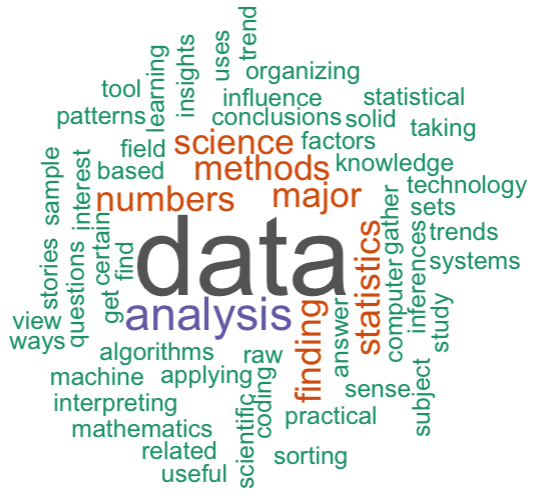
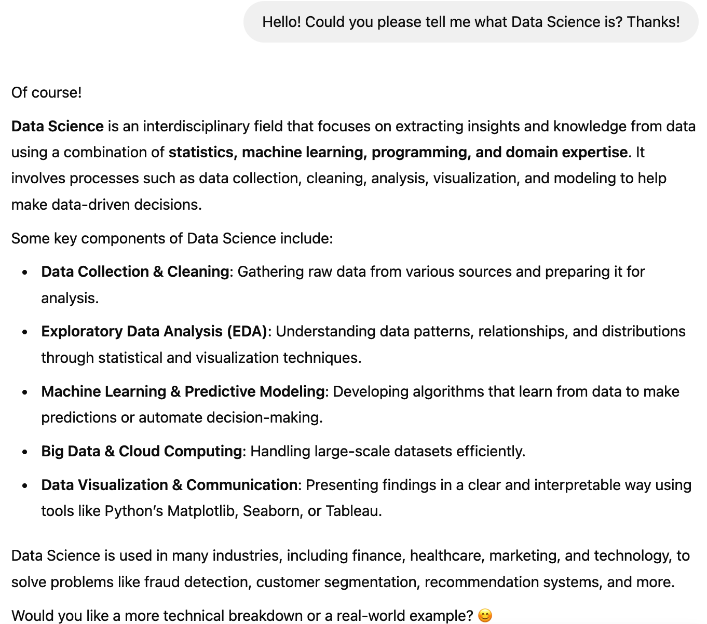

Cat.ID Breed Age Sex Neutered
1 Domestic Short hair 14.7515400 Male Neutered
2 Domestic Short hair 13.3305955 Male Unknown
3 Domestic Short hair 14.5270363 Female Neutered
4 Domestic Short hair 14.8364134 Male Neutered
5 Domestic Short hair 13.4154689 Female Neutered
6 Domestic Short hair 12.5338809 Male Unknown
7 Domestic Short hair 12.3641342 Female Neutered
8 Domestic Short hair 7.6522930 Male Unknown
9 Domestic Short hair 18.7515400 Male Neutered
10 Domestic Short hair 11.2005476 Female Neutered
11 Domestic Short hair 12.4298426 Female Neutered
12 Domestic Short hair 7.5865845 Female Neutered
13 Domestic Short hair 7.5865845 Female Neutered
14 Domestic Short hair 17.3935661 Male Unknown
15 Domestic Short hair 7.7125257 Male Neutered
16 Domestic Short hair 10.2313484 Male Unknown
17 Domestic Short hair 6.3709788 Female Neutered
18 Domestic Short hair 6.4175222 Male Neutered
19 Domestic Short hair 6.3463381 Female Unknown
20 Domestic Short hair 8.5968515 Female Unknown
21 Domestic Short hair 9.0704997 Female Unknown
22 Domestic Short hair 8.0657084 Female Unknown
23 Domestic Short hair 9.3305955 Male Neutered
24 Domestic Short hair 10.6146475 Female Neutered
25 Domestic Short hair 10.6146475 Male Neutered
26 Domestic Short hair 10.9212868 Male Neutered
27 Domestic Short hair 10.4421629 Female Unknown
28 Domestic Short hair 12.2491444 Male Neutered
29 Domestic Short hair 10.2642026 Male Neutered
30 Domestic Short hair 17.9301848 Female Unknown
31 Domestic Short hair 10.1656400 Female Unknown
32 Domestic Short hair 12.4845996 Male Unknown
33 Domestic Short hair 12.0876112 Male Neutered
34 Domestic Short hair 12.6926762 Female Neutered
35 Domestic Short hair 11.8110883 Female Unknown
36 Domestic Short hair 11.6988364 Male Unknown
37 Domestic Short hair 11.5838467 Male Neutered
38 Domestic Short hair 11.6112252 Female Unknown
39 Domestic Short hair 10.7515400 Female Neutered
40 Domestic Short hair 10.6694045 Male Unknown
41 Domestic Short hair 10.7351129 Male Neutered
42 Domestic Short hair 7.6577687 Male Unknown
43 Domestic Short hair 13.4154689 Male Unknown
44 Domestic Short hair 22.7515400 Female Neutered
45 Domestic Short hair 13.8343600 Female Unknown
46 Domestic Short hair 18.5845311 Female Unknown
47 Domestic Short hair 14.3874059 Male Neutered
48 Domestic Short hair 17.4401095 Male Unknown
49 Domestic Short hair 9.4099932 Female Unknown
50 Domestic Short hair 8.3778234 Female Unknown
51 Domestic Short hair 15.1238877 Female Neutered
52 Domestic Short hair 8.7008898 Female Unknown
53 Domestic Short hair 10.4175222 Female Neutered
54 Domestic Short hair 10.4175222 Male Neutered
55 Domestic Short hair 19.9370294 Female Neutered
56 Domestic Short hair 9.8261465 Male Neutered
57 Domestic Short hair 15.9972621 Male Neutered
58 Domestic Short hair 19.4360027 Female Neutered
59 Domestic Short hair 13.6673511 Female Neutered
60 Domestic Short hair 9.0458590 Female Unknown
61 Domestic Short hair 6.9212868 Male Unknown
62 Domestic Short hair 15.9972621 Male Unknown
63 Domestic Short hair 19.7015743 Female Neutered
64 Domestic Short hair 11.3319644 Female Neutered
65 Domestic Short hair 19.8275154 Male Neutered
66 Domestic Short hair 17.8015058 Male Unknown
67 Domestic Short hair 6.1464750 Female Unknown
68 Domestic Short hair 10.8062971 Female Unknown
69 Domestic Short hair 17.9986311 Female Neutered
70 Domestic Long Hair 17.7631759 Male Unknown
71 Domestic Medium Hair 8.2710472 Female Unknown
72 Domestic Short hair 8.5886379 Female Unknown
73 Domestic Short hair 8.5886379 Male Unknown
74 Domestic Short hair 8.5886379 Female Unknown
75 Domestic Short hair 8.5886379 Female Neutered
76 Domestic Short hair 13.9986311 Female Unknown
77 Domestic Short hair 18.9979466 Male Unknown
78 Domestic Short hair 7.4195756 Male Neutered
79 Domestic Short hair 6.9158111 Male Unknown
80 Domestic Short hair 6.4175222 Female Unknown
81 Domestic Short hair 22.8583162 Male Unknown
82 Domestic Long Hair 6.6584531 Female Unknown
83 Domestic Long Hair 8.8815880 Male Unknown
84 Domestic Long Hair 8.8706366 Male Unknown
85 Domestic Medium Hair 6.7707050 Female Unknown
86 Domestic Semi Long Hair 5.8863792 Female Unknown
87 Domestic Semi Long Hair 5.8863792 Male Neutered
88 Domestic Long Hair 15.3921971 Male Unknown
89 Domestic Long Hair 15.6796715 Female Neutered
90 Domestic Medium Hair 9.8863792 Male Unknown
91 Domestic Long Hair 9.5222450 Female Unknown
92 Domestic Medium Hair 13.4565366 Male Neutered
93 Domestic Semi Long Hair 7.5017112 Male Unknown
94 Domestic Long Hair 7.3921971 Female Unknown
95 Domestic Long Hair 14.2039699 Female Unknown
96 Domestic Long Hair 5.6208077 Male Neutered
97 Domestic Semi Long Hair 5.8179329 Female Neutered
98 Domestic Medium Hair 5.1718001 Male Unknown
99 Domestic Medium Hair 5.7549624 Female Neutered
100 Domestic Long Hair 4.3559206 Male Neutered
101 Domestic Short hair 11.7891855 Male Neutered
102 Domestic Short hair 7.2662560 Female Unknown
103 Domestic Short hair 11.7262149 Female Entire
104 Domestic Short hair 5.6427105 Male Neutered
105 Domestic Short hair 15.0828200 Female Unknown
106 Domestic Short hair 18.0835044 Female Unknown
107 Domestic Short hair 21.5003422 Female Unknown
108 Domestic Short hair 12.8186174 Female Unknown
109 Domestic Short hair 12.4982888 Female Unknown
110 Domestic Short hair 16.2628337 Female Neutered
111 Domestic Short hair 13.5824778 Male Neutered
112 Domestic Short hair 13.5824778 Male Neutered
113 Domestic Short hair 16.6680356 Female Neutered
114 Domestic Short hair 10.3490760 Female Unknown
115 Domestic Short hair 7.5592060 Male Unknown
116 Domestic Short hair 6.5325120 Female Unknown
117 Domestic Short hair 6.4175222 Male Neutered
118 Domestic Short hair 13.1909651 Female Neutered
119 Domestic Short hair 9.7440110 Male Unknown
120 Domestic Short hair 17.1882272 Female Unknown
121 Domestic Short hair 16.1642710 Male Unknown
122 Domestic Short hair 8.4845996 Male Unknown
123 Domestic Short hair 10.3134839 Female Unknown
124 Domestic Short hair 12.3011636 Female Neutered
125 Domestic Short hair 14.8911704 Male Unknown
126 Domestic Short hair 13.6673511 Male Unknown
127 Domestic Short hair 12.2765229 Male Unknown
128 Domestic Short hair 17.4154689 Female Unknown
129 Domestic Short hair 6.8610541 Male Unknown
130 Domestic Short hair 13.9986311 Male Neutered
131 Domestic Short hair 10.5434634 Female Unknown
132 Domestic Short hair 12.0821355 Female Neutered
133 Domestic Short hair 7.5236140 Male Unknown
134 Domestic Short hair 7.5263518 Female Neutered
135 Domestic Short hair 8.3668720 Female Neutered
136 Domestic Short hair 7.4496920 Male Unknown
137 Domestic Short hair 20.4161533 Female Unknown
138 Domestic Short hair 6.4175222 Male Neutered
139 Domestic Short hair 17.0102669 Male Neutered
140 Domestic Short hair 9.3333333 Female Neutered
141 Domestic Short hair 9.3333333 Female Unknown
142 Domestic Short hair 4.5475702 Male Neutered
143 Domestic Short hair 10.7323751 Male Unknown
144 Domestic Short hair 9.4537988 Male Unknown
145 Domestic Medium Hair 9.7878166 Male Unknown
146 Domestic Long Hair 11.1375770 Male Neutered
147 Domestic Medium Hair 13.8097194 Female Unknown
148 Bengal 8.2299795 Male Unknown
149 Domestic Semi Long Hair 5.2375086 Male Unknown
150 Domestic Long Hair 4.3559206 Female Neutered
151 Domestic Semi Long Hair 4.3285421 Male Unknown
152 Domestic Short hair 10.7460643 Male Unknown
153 Domestic Short hair 5.5989049 Male Unknown
154 Domestic Short hair 5.4893908 Male Unknown
155 Domestic Short hair 5.5906913 Female Unknown
156 Domestic Short hair 4.7255305 Male Neutered
157 Domestic Short hair 4.7255305 Female Unknown
158 Domestic Short hair 12.2600958 Male Unknown
159 Domestic Short hair 10.3436003 Male Neutered
160 Domestic Short hair 9.2484600 Female Unknown
161 Domestic Short hair 4.6105407 Male Unknown
162 Domestic Short hair 4.6680356 Male Neutered
163 Domestic Short hair 4.6543463 Male Neutered
164 Domestic Short hair 5.4291581 Female Unknown
165 Domestic Short hair 6.6447639 Female Neutered
166 Domestic Short hair 17.8206708 Male Unknown
167 Domestic Short hair 8.4134155 Female Unknown
168 Domestic Short hair 10.0314853 Female Neutered
169 Domestic Short hair 13.4647502 Male Neutered
170 Domestic Short hair 10.9459274 Male Neutered
171 Domestic Short hair 9.5879535 Female Unknown
172 Domestic Short hair 9.5879535 Male Neutered
173 Domestic Short hair 8.7802875 Female Unknown
174 Domestic Short hair 8.5530459 Male Neutered
175 Domestic Short hair 4.7665982 Female Unknown
176 Domestic Short hair 4.6160164 Male Neutered
177 Domestic Short hair 11.4442163 Male Neutered
178 Domestic Short hair 5.1362081 Female Neutered
179 Domestic Short hair 7.3839836 Female Unknown
180 Domestic Short hair 4.4900753 Male Neutered
181 Domestic Short hair 13.2292950 Female Neutered
182 Domestic Short hair NA Male Unknown
183 Domestic Short hair 4.7173169 Female Neutered
184 Domestic Short hair 4.3915127 Male Neutered
185 Domestic Short hair 14.5023956 Male Unknown
186 Domestic Short hair 12.4982888 Female Unknown
187 Domestic Short hair 15.9972621 Female Unknown
188 Domestic Short hair 13.9986311 Male Neutered
189 Domestic Short hair 15.7618070 Female Unknown
190 Domestic Short hair 6.4640657 Female Neutered
191 Domestic Short hair 6.4175222 Male Neutered
192 Domestic Short hair 10.4065708 Male Unknown
193 Domestic Short hair 12.7118412 Female Unknown
194 Domestic Short hair 11.9780972 Female Neutered
195 Domestic Short hair 9.7522245 Male Neutered
196 Domestic Short hair 13.6563997 Male Unknown
197 Domestic Short hair 17.5058179 Female Neutered
198 Domestic Short hair 16.3778234 Male Unknown
199 Domestic Short hair 22.3408624 Male Unknown
200 Domestic Short hair 6.2039699 Female Unknown
201 Domestic Short hair 5.8015058 Male Unknown
202 Domestic Short hair 5.7385352 Male Neutered
203 Domestic Short hair 4.7583847 Male Neutered
204 Domestic Short hair 4.7227926 Male Neutered
205 Domestic Short hair 16.9719370 Male Unknown
206 Domestic Short hair 16.3997262 Male Unknown
207 Domestic Short hair 16.3915127 Male Unknown
208 Domestic Short hair 4.3915127 Male Neutered
209 Domestic Short hair 6.2067077 Male Neutered
210 Domestic Short hair 8.2491444 Male Unknown
211 Domestic Short hair 4.6214921 Female Neutered
212 Domestic Short hair 5.9466119 Male Unknown
213 Domestic Short hair 11.3949350 Male Neutered
214 Domestic Short hair 5.5112936 Female Unknown
215 Domestic Short hair 4.7501711 Male Unknown
216 Domestic Short hair 4.4763860 Male Unknown
217 Domestic Short hair 8.5420945 Male Neutered
218 Domestic Short hair 4.6872005 Male Entire
219 Domestic Short hair 4.7364819 Female Neutered
220 Domestic Short hair 4.5995893 Male Neutered
221 Domestic Short hair 6.9979466 Female Neutered
222 Domestic Short hair 5.2867899 Female Neutered
223 Domestic Short hair 14.8856947 Male Neutered
224 Domestic Short hair 6.8939083 Male Neutered
225 Domestic Short hair 4.6132786 Male Neutered
226 Domestic Short hair 4.3750856 Male Neutered
227 Domestic Short hair 4.3750856 Male Unknown
228 Domestic Short hair 4.4928131 Female Neutered
229 Domestic Short hair 4.4572211 Female Neutered
230 Domestic Short hair 4.5010267 Female Unknown
231 Domestic Short hair 4.5338809 Male Unknown
232 Domestic Short hair 4.5338809 Female Neutered
233 Domestic Short hair 15.6687201 Female Unknown
234 Domestic Short hair 19.7508556 Male Unknown
235 Domestic Short hair 14.7515400 Male Unknown
236 Domestic Short hair 12.9117043 Male Unknown
237 Domestic Short hair 13.5824778 Male Unknown
238 Domestic Short hair 19.3100616 Male Unknown
239 Domestic Short hair 4.4763860 Female Unknown
240 Domestic Short hair 4.4599589 Male Unknown
241 Domestic Short hair 4.4763860 Male Unknown
242 Domestic Short hair 4.3312799 Male Neutered
243 Domestic Short hair 6.7624914 Male Unknown
244 Domestic Short hair 4.3312799 Female Neutered
245 Domestic Short hair 19.6687201 Male Neutered
246 Domestic Short hair 13.9986311 Female Unknown
247 Domestic Short hair 15.1238877 Male Neutered
248 Domestic Short hair 14.8062971 Male Neutered
249 Domestic Short hair 9.7494867 Female Unknown
250 Domestic Short hair 13.7494867 Female Unknown
251 Domestic Short hair 15.7809719 Female Unknown
252 Domestic Short hair 15.7809719 Female Unknown
253 Domestic Short hair 15.9123888 Male Neutered
254 Domestic Short hair 15.0663929 Male Neutered
255 Domestic Short hair 13.5934292 Male Neutered
256 Domestic Short hair 20.1642710 Male Unknown
257 Domestic Short hair 17.4154689 Female Neutered
258 Domestic Short hair 6.6283368 Male Neutered
259 Domestic Short hair 5.7166324 Female Unknown
260 Domestic Short hair 7.0527036 Female Unknown
261 Domestic Short hair 7.9972621 Male Neutered
262 Domestic Short hair 6.1218344 Female Unknown
263 Domestic Short hair 9.0732375 Female Unknown
264 Domestic Short hair 13.3305955 Female Neutered
265 Domestic Short hair 14.6694045 Male Unknown
266 Domestic Short hair 16.3312799 Male Unknown
267 Domestic Short hair 19.8357290 Male Neutered
268 Domestic Short hair 13.7138946 Male Unknown
269 Domestic Short hair 7.6522930 Male Unknown
270 Domestic Short hair 9.8042437 Male Unknown
271 Domestic Short hair 11.2443532 Male Unknown
272 Domestic Short hair 8.3477070 Female Neutered
273 Domestic Short hair 10.7515400 Male Neutered
274 Domestic Short hair 10.4010951 Male Neutered
275 Domestic Short hair 11.5017112 Male Unknown
276 Domestic Short hair 17.5058179 Male Unknown
277 Domestic Short hair 6.7597536 Male Entire
278 Domestic Short hair 7.4442163 Female Unknown
279 Domestic Short hair 14.2943190 Male Neutered
280 Domestic Short hair 9.7741273 Male Unknown
281 Domestic Short hair 6.2833676 Male Unknown
282 Domestic Short hair 6.4010951 Female Neutered
283 Domestic Short hair 4.7392197 Male Neutered
284 Domestic Short hair 5.2648871 Female Neutered
285 Domestic Short hair 15.6687201 Female Unknown
286 Domestic Short hair 15.6687201 Female Unknown
287 Domestic Long Hair 13.0568104 Male Neutered
288 Domestic Long Hair 16.7337440 Male Neutered
289 Domestic Semi Long Hair 9.1115674 Male Neutered
290 Domestic Short hair 4.5037645 Female Unknown
291 Domestic Short hair 4.5037645 Male Unknown
292 Domestic Short hair 4.7036277 Female Neutered
293 Domestic Short hair 4.5420945 Female Unknown
294 Domestic Short hair 4.4763860 Male Unknown
295 Domestic Short hair 14.7515400 Female Neutered
296 Domestic Short hair 17.3305955 Male Unknown
297 Domestic Short hair 15.2498289 Male Neutered
298 Domestic Short hair 14.5023956 Female Unknown
299 Domestic Short hair 17.5003422 Male Neutered
300 Domestic Short hair 20.3312799 Male Neutered
301 Domestic Short hair 21.9438741 Male Unknown
302 Domestic Short hair 11.3292266 Female Unknown
303 Domestic Short hair 9.4565366 Male Neutered
304 Domestic Short hair 10.7214237 Female Unknown
305 Domestic Short hair 9.4264203 Male Entire
306 Domestic Short hair 9.4264203 Female Entire
307 Domestic Short hair 9.2922656 Female Neutered
308 Domestic Short hair 9.9493498 Female Neutered
309 Domestic Short hair 18.5462012 Female Unknown
310 Domestic Short hair 11.4989733 Female Unknown
311 Domestic Short hair 18.9130732 Female Unknown
312 Domestic Short hair 16.5831622 Male Neutered
313 Domestic Short hair 11.7645448 Male Neutered
314 Domestic Short hair 14.9979466 Female Unknown
315 Domestic Short hair 7.8576318 Male Neutered
316 Domestic Semi Long Hair 5.1225188 Male Unknown
317 Domestic Long Hair 17.9137577 Male Neutered
318 Domestic Short hair 16.8350445 Male Neutered
319 Domestic Short hair 9.4893908 Female Neutered
320 Domestic Short hair 7.5482546 Female Neutered
321 Domestic Short hair 8.5886379 Female Unknown
322 Domestic Short hair 9.0622861 Male Neutered
323 Domestic Short hair 6.5763176 Female Unknown
324 Domestic Short hair 6.5270363 Female Neutered
325 Domestic Short hair 6.4421629 Male Unknown
326 Domestic Short hair 5.3141684 Female Neutered
327 Domestic Medium Hair 5.9274470 Male Neutered
328 Domestic Long Hair 17.8343600 Female Neutered
329 Domestic Medium Hair 7.5701574 Male Unknown
330 Domestic Semi Long Hair 6.2258727 Female Neutered
331 Domestic Medium Hair 6.3326489 Male Neutered
332 Domestic Medium Hair 6.3326489 Male Neutered
333 Domestic Long Hair 5.3141684 Male Neutered
334 Domestic Medium Hair 9.7084189 Male Neutered
335 Domestic Medium Hair 7.7837098 Male Neutered
336 Domestic Long Hair 13.5824778 Female Unknown
337 Domestic Medium Hair 11.5920602 Male Neutered
338 Domestic Medium Hair 11.4880219 Male Neutered
339 Domestic Long Hair 9.3196441 Female Unknown
340 Domestic Long Hair 7.4332649 Male Neutered
341 Domestic Short hair 4.1779603 Male Unknown
342 Domestic Short hair 7.7070500 Male Unknown
343 Domestic Short hair 18.5845311 Female Unknown
344 Domestic Short hair 18.2505133 Female Neutered
345 Domestic Short hair 16.4490075 Female Unknown
346 Domestic Short hair 12.4079398 Male Neutered
347 Domestic Short hair 11.4168378 Female Neutered
348 Domestic Short hair 18.3956194 Female Unknown
349 Domestic Short hair 6.3874059 Female Neutered
350 Domestic Short hair 6.1984942 Female Unknown
351 Domestic Short hair 8.4709103 Female Unknown
352 Domestic Short hair 9.3305955 Female Unknown
353 Domestic Short hair 13.7577002 Female Unknown
354 Domestic Short hair 14.2176591 Female Unknown
355 Domestic Short hair 11.5975359 Female Unknown
356 Domestic Short hair 17.9986311 Female Unknown
357 Domestic Short hair 6.8364134 Female Neutered
358 Domestic Short hair 10.7652293 Female Unknown
359 Domestic Short hair 12.8459959 Female Unknown
360 Domestic Short hair 5.7686516 Female Unknown
361 Domestic Short hair 14.5023956 Female Neutered
362 Domestic Short hair 14.5023956 Female Neutered
363 Domestic Short hair 8.8213552 Female Neutered
364 Domestic Short hair 6.3901437 Female Neutered
365 Domestic Long Hair 7.1238877 Female Unknown
366 Domestic Semi Long Hair 6.6803559 Female Unknown
367 Domestic Long Hair 10.6995209 Female Unknown
368 Domestic Long Hair 13.1088296 Female Unknown
369 Domestic Medium Hair 5.4318960 Female Neutered
370 Domestic Long Hair 9.6563997 Male Unknown
371 Domestic Long Hair 5.0896646 Female Unknown
372 Domestic Long Hair 15.4168378 Female Unknown
373 Domestic Long Hair 12.9965777 Female Neutered
374 Domestic Medium Hair 15.9123888 Female Unknown
375 Domestic Short hair 9.4537988 Female Neutered
376 Domestic Short hair 8.6954141 Male Unknown
377 Domestic Short hair 16.8350445 Male Unknown
378 Domestic Short hair 14.5023956 Male Unknown
379 Domestic Short hair 15.9123888 Female Neutered
380 Domestic Short hair 15.8357290 Female Neutered
381 Domestic Short hair 16.8350445 Female Unknown
382 Domestic Short hair 16.7501711 Female Neutered
383 Domestic Short hair 7.0444901 Female Neutered
384 Domestic Short hair 4.5037645 Female Unknown
385 Domestic Short hair 4.1314168 Male Neutered
386 Domestic Short hair 6.4120465 Female Unknown
387 Domestic Short hair 13.4072553 Male Neutered
388 Domestic Short hair 9.0732375 Female Unknown
389 Domestic Short hair 13.5003422 Male Neutered
390 Domestic Short hair 9.7850787 Male Unknown
391 Domestic Short hair 9.3607118 Male Neutered
392 Domestic Short hair 10.5845311 Male Neutered
393 Domestic Short hair 12.5503080 Female Neutered
394 Domestic Short hair 19.5756331 Female Unknown
395 Domestic Short hair 13.1115674 Male Unknown
396 Domestic Short hair 6.7679671 Male Unknown
397 Domestic Short hair 15.9972621 Male Unknown
398 Domestic Long Hair 7.1622177 Female Entire
399 Domestic Long Hair 16.9582478 Female Neutered
400 Domestic Long Hair 6.2231348 Male Unknown
401 Domestic Medium Hair 6.4175222 Male Unknown
402 Domestic Medium Hair 11.5592060 Male Neutered
403 Domestic Medium Hair 14.2121834 Male Unknown
404 Domestic Short hair 4.4024641 Female Unknown
405 Domestic Short hair 16.4161533 Female Neutered
406 Domestic Short hair 14.5023956 Male Unknown
407 Domestic Short hair 16.3312799 Male Unknown
408 Domestic Short hair 14.3326489 Female Unknown
409 Domestic Short hair 12.3312799 Female Unknown
410 Domestic Short hair 12.3312799 Male Neutered
411 Domestic Short hair 4.9582478 Female Neutered
412 Domestic Short hair 10.5845311 Male Neutered
413 Domestic Short hair 10.6639288 Male Unknown
414 Domestic Long Hair 12.8761123 Male Neutered
415 Domestic Medium Hair 6.5106092 Female Unknown
416 Domestic Medium Hair 6.5023956 Male Unknown
417 Domestic Semi Long Hair 6.0944559 Male Unknown
418 Domestic Medium Hair 8.5639973 Female Unknown
419 Domestic Medium Hair 10.2422998 Male Neutered
420 Domestic Semi Long Hair 5.5359343 Female Unknown
421 Domestic Semi Long Hair 5.5112936 Female Unknown
422 Domestic Long Hair 18.3080082 Male Neutered
423 Domestic Long Hair 16.6680356 Male Neutered
424 Domestic Long Hair 16.5256674 Male Unknown
425 Domestic Long Hair 6.4312115 Male Unknown
426 Domestic Medium Hair 8.3312799 Female Unknown
427 Domestic Semi Long Hair 17.7029432 Male Unknown
428 Domestic Semi Long Hair 4.0520192 Male Neutered
429 Domestic Long Hair 1.5003422 Male Neutered
430 Domestic Short hair 12.8651608 Female Neutered
431 Domestic Short hair 17.5003422 Female Neutered
432 Domestic Short hair 15.5017112 Male Unknown
433 Domestic Short hair 14.5023956 Male Neutered
434 Domestic Short hair 19.2498289 Male Neutered
435 Domestic Short hair 19.4168378 Male Neutered
436 Domestic Short hair 21.0157426 Female Unknown
437 Domestic Short hair 7.6522930 Male Unknown
438 Domestic Short hair 18.8939083 Female Unknown
439 Domestic Short hair 8.6269678 Male Unknown
440 Domestic Short hair 5.2867899 Female Neutered
441 Domestic Short hair 8.3422313 Male Neutered
442 Domestic Short hair 8.3422313 Female Neutered
443 Domestic Short hair 10.8145106 Male Unknown
444 Domestic Short hair 19.6878850 Female Unknown
445 Domestic Short hair 21.3305955 Male Unknown
446 Domestic Short hair 3.6468172 Female Neutered
447 Domestic Short hair 18.8829569 Female Unknown
448 Domestic Short hair 12.5475702 Male Neutered
449 Domestic Short hair 13.0814511 Male Unknown
450 Domestic Short hair 11.4907598 Male Unknown
451 Domestic Short hair 18.2258727 Female Unknown
452 Domestic Short hair 20.2491444 Female Unknown
453 Domestic Short hair 4.0602327 Female Unknown
454 Domestic Short hair 19.9041752 Male Neutered
455 Domestic Short hair 5.5989049 Male Unknown
456 Domestic Short hair 14.7515400 Female Unknown
457 Domestic Short hair 14.7515400 Male Neutered
458 Domestic Short hair 11.9452430 Male Neutered
459 Domestic Short hair 9.7494867 Female Neutered
460 Domestic Semi Long Hair 5.5359343 Female Unknown
461 Domestic Medium Hair 10.9979466 Male Neutered
462 Domestic Short hair 18.9979466 Female Neutered
463 Domestic Short hair 11.2361396 Female Unknown
464 Domestic Short hair 10.6201232 Female Unknown
465 Domestic Short hair 10.4175222 Female Neutered
466 Domestic Short hair 8.6433949 Male Neutered
467 Domestic Short hair 17.5961670 Female Unknown
468 Domestic Short hair 7.5783710 Female Unknown
469 Domestic Short hair 5.5222450 Male Neutered
470 Domestic Short hair 5.3032170 Male Neutered
471 Domestic Short hair 16.8350445 Male Neutered
472 Domestic Short hair 6.7241615 Male Unknown
473 Domestic Short hair 5.3305955 Female Neutered
474 Domestic Short hair 6.9459274 Male Unknown
475 Domestic Short hair 17.2813142 Male Neutered
476 Domestic Short hair 6.3901437 Male Neutered
477 Domestic Short hair 12.8350445 Female Neutered
478 Domestic Medium Hair 10.7077344 Male Neutered
479 Domestic Semi Long Hair 3.4031485 Male Neutered
480 Domestic Long Hair 3.4004107 Male Neutered
481 Domestic Long Hair 12.9965777 Female Unknown
482 Domestic Short hair 5.7494867 Male Neutered
483 Domestic Short hair 13.1635866 Male Unknown
484 Domestic Short hair 4.4900753 Female Neutered
485 Domestic Short hair 15.0280630 Female Unknown
486 Domestic Short hair 4.1834360 Male Unknown
487 Domestic Short hair 4.2491444 Male Neutered
488 Domestic Short hair 15.6687201 Male Neutered
489 Domestic Short hair 14.4421629 Female Neutered
490 Domestic Short hair 17.3744011 Male Neutered
491 Domestic Short hair 9.8453114 Female Neutered
492 Domestic Short hair 7.5482546 Male Neutered
493 Domestic Short hair 18.7268994 Female Neutered
494 Domestic Short hair 7.1348392 Male Entire
495 Domestic Short hair 13.8261465 Female Unknown
496 Domestic Short hair 6.6803559 Male Unknown
497 Domestic Short hair 6.2724162 Male Neutered
498 Domestic Short hair 9.7248460 Female Unknown
499 Domestic Short hair 8.7255305 Male Neutered
500 Domestic Short hair 8.7255305 Male Unknown
501 Domestic Short hair 19.9123888 Male Unknown
502 Domestic Short hair 13.4154689 Male Unknown
503 Domestic Short hair 6.2286105 Male Unknown
504 Domestic Short hair 10.5598905 Female Unknown
505 Domestic Short hair 4.7501711 Female Neutered
506 Domestic Short hair 4.3203285 Female Unknown
507 Domestic Short hair 14.7515400 Female Neutered
508 Domestic Short hair 10.0616016 Female Unknown
509 Domestic Short hair 9.6509240 Male Neutered
510 Domestic Short hair 11.5373032 Male Neutered
511 Domestic Short hair 11.5811088 Female Unknown
512 Bengal 8.3942505 Female Unknown
513 Domestic Long Hair 11.5975359 Female Unknown
514 Domestic Long Hair 15.3182752 Female Unknown
515 Domestic Semi Long Hair 5.5879535 Female Unknown
516 Domestic Long Hair 5.4647502 Female Neutered
517 Bengal 4.9911020 Male Neutered
518 Domestic Medium Hair 9.6563997 Female Unknown
519 Bengal 4.6160164 Male Neutered
520 Domestic Short hair 15.4168378 Female Neutered
521 Domestic Short hair 16.1861739 Female Unknown
522 Domestic Short hair 8.2381930 Female Neutered
523 Domestic Short hair 10.1054073 Male Unknown
524 Domestic Short hair 5.6290212 Female Neutered
525 Domestic Short hair 6.0451745 Female Neutered
526 Domestic Short hair 16.5831622 Female Unknown
527 Domestic Long Hair 16.1642710 Male Neutered
528 Domestic Long Hair 21.4647502 Female Neutered
529 Domestic Long Hair 5.6728268 Female Unknown
530 Domestic Medium Hair 5.1827515 Female Unknown
531 Domestic Medium Hair 5.1827515 Male Neutered
532 Domestic Medium Hair 15.7563313 Male Neutered
533 Domestic Medium Hair 15.7508556 Female Unknown
534 Domestic Long Hair 11.2361396 Female Neutered
535 Bengal 5.8124572 Male Neutered
536 Domestic Long Hair 5.3223819 Male Neutered
537 Domestic Long Hair 13.1635866 Male Unknown
538 Domestic Medium Hair 7.0444901 Female Neutered
539 Domestic Long Hair 10.9979466 Female Entire
540 Domestic Medium Hair 5.9986311 Male Neutered
541 Domestic Long Hair 16.4161533 Female Neutered
542 Domestic Long Hair 11.5017112 Male Neutered
543 Domestic Long Hair 13.5003422 Male Unknown
544 Domestic Long Hair 10.8555784 Male Unknown
545 Domestic Semi Long Hair 3.2498289 Female Unknown
546 Domestic Long Hair 5.7303217 Male Unknown
547 Domestic Short hair 17.7823409 Female Unknown
548 Domestic Short hair 5.2101300 Male Neutered
549 Domestic Short hair 14.7515400 Female Neutered
550 Domestic Short hair 7.8083504 Male Unknown
551 Domestic Short hair 8.7337440 Male Unknown
552 Domestic Short hair 12.5366188 Male Unknown
553 Domestic Short hair 4.9171800 Female Neutered
554 Domestic Short hair 9.7494867 Female Unknown
555 Domestic Short hair 11.5208761 Female Neutered
556 Domestic Short hair 11.4086242 Male Neutered
557 Domestic Short hair 10.8555784 Female Unknown
558 Domestic Short hair 10.8555784 Female Neutered
559 Domestic Short hair 14.5626283 Female Neutered
560 Domestic Short hair 12.8706366 Female Unknown
561 Domestic Long Hair 19.3347023 Male Neutered
562 Domestic Long Hair 14.9623546 Female Unknown
563 Domestic Medium Hair 11.1047228 Male Neutered
564 Domestic Medium Hair 11.6933607 Male Neutered
565 Domestic Medium Hair 3.4798084 Female Unknown
566 Domestic Medium Hair 8.6160164 Male Unknown
567 Domestic Long Hair 8.7282683 Female Unknown
568 Domestic Short hair 7.7262149 Male Neutered
569 Domestic Short hair 23.2224504 Male Neutered
570 Domestic Short hair 19.1622177 Male Unknown
571 Domestic Short hair 8.1587953 Female Unknown
572 Domestic Short hair 17.2484600 Female Unknown
573 Domestic Short hair 14.1930185 Male Neutered
574 Domestic Short hair 2.3572895 Female Unknown
575 Domestic Short hair 2.3791923 Female Neutered
576 Domestic Short hair 7.5728953 Male Unknown
577 Domestic Short hair 4.3039014 Female Neutered
578 Domestic Short hair 4.1834360 Male Unknown
579 Domestic Short hair 9.0266940 Male Unknown
580 Domestic Short hair 8.5886379 Female Neutered
581 Domestic Short hair 9.1635866 Male Unknown
582 Domestic Short hair 17.5961670 Male Unknown
583 Domestic Short hair 5.6728268 Female Neutered
584 Domestic Short hair 5.4236824 Male Neutered
585 Domestic Short hair 17.3305955 Male Unknown
586 Domestic Short hair 10.5845311 Male Neutered
587 Domestic Short hair 14.7077344 Male Neutered
588 Domestic Short hair 5.1362081 Female Unknown
589 Domestic Short hair 17.4154689 Male Neutered
590 Domestic Short hair 13.9986311 Female Unknown
591 Domestic Short hair 2.3928816 Female Neutered
592 Domestic Short hair 16.5694730 Female Unknown
593 Domestic Short hair 16.7501711 Male Neutered
594 Domestic Short hair 9.4510609 Male Neutered
595 Domestic Short hair 12.7501711 Male Neutered
596 Domestic Short hair 1.5550992 Male Unknown
597 Domestic Short hair 2.9678303 Male Unknown
598 Domestic Short hair 3.6522930 Male Neutered
599 Domestic Short hair 3.1649555 Female Neutered
600 Domestic Short hair 3.2416153 Female Unknown
601 Domestic Short hair 16.3696099 Male Entire
602 Domestic Long Hair 8.6406571 Female Neutered
603 Domestic Long Hair 17.2019165 Female Unknown
604 Domestic Long Hair 2.4394251 Female Unknown
605 Domestic Short hair 13.7494867 Female Unknown
606 Domestic Short hair 10.7652293 Female Unknown
607 Domestic Short hair 14.1382615 Female Unknown
608 Domestic Short hair 13.3771389 Female Neutered
609 Domestic Short hair 20.0821355 Female Unknown
610 Domestic Short hair 9.4318960 Female Neutered
611 Domestic Short hair 15.5154004 Female Neutered
612 Domestic Short hair 16.3312799 Female Neutered
613 Domestic Short hair 19.9780972 Female Neutered
614 Domestic Short hair 6.1984942 Female Neutered
615 Domestic Short hair 4.3778234 Female Neutered
616 Domestic Short hair 5.3634497 Female Neutered
617 Domestic Short hair 11.2553046 Female Unknown
618 Domestic Short hair 10.7652293 Female Unknown
619 Domestic Short hair 7.9972621 Female Unknown
620 Domestic Short hair 9.2156057 Female Unknown
621 Domestic Long Hair 10.6995209 Male Neutered
622 Other NA Unknown Entire
623 Domestic Medium Hair 9.5112936 Male Neutered
624 Domestic Long Hair 11.1594798 Female Unknown
625 Other NA Unknown Entire
626 Domestic Long Hair 7.4414784 Male Neutered
627 Domestic Medium Hair 4.3696099 Male Neutered
628 Domestic Long Hair 12.8021903 Female Neutered
629 Other NA Unknown Entire
630 Domestic Long Hair 13.7494867 Female Neutered
631 Domestic Long Hair 8.9965777 Female Entire
632 Domestic Long Hair 1.5030801 Male Entire
633 Domestic Short hair 16.4818617 Male Neutered
634 Domestic Short hair NA Unknown Unknown
635 Domestic Short hair 8.9363450 Male Unknown
636 Domestic Short hair 4.7693361 Female Unknown
637 Domestic Short hair 5.3579740 Female Neutered
638 Domestic Short hair 16.5010267 Male Neutered
639 Domestic Short hair 16.8350445 Female Neutered
640 Domestic Short hair 14.8364134 Male Unknown
641 Domestic Short hair 20.4161533 Female Unknown
642 Domestic Short hair 16.5831622 Male Unknown
643 Domestic Short hair 6.9815195 Female Unknown
644 Domestic Short hair 9.5058179 Male Neutered
645 Domestic Short hair 15.6331280 Male Neutered
646 Domestic Short hair 10.6721424 Female Unknown
647 Domestic Short hair 8.6105407 Female Unknown
648 Domestic Short hair 1.5304586 Male Neutered
649 Domestic Short hair 2.5598905 Male Neutered
650 Domestic Short hair 3.5017112 Female Unknown
651 Domestic Short hair 8.7967146 Male Neutered
652 Domestic Short hair 8.2929500 Male Unknown
653 Domestic Short hair 5.8863792 Male Neutered
654 Domestic Short hair 1.2867899 Male Neutered
655 Domestic Short hair 1.3552361 Male Unknown
656 Domestic Short hair 14.9979466 Male Entire
657 Domestic Short hair 4.8240931 Male Unknown
658 Domestic Short hair 15.5017112 Female Neutered
659 Domestic Short hair 12.7392197 Male Neutered
660 Domestic Short hair 12.7036277 Female Neutered
661 Domestic Short hair 9.7111567 Male Unknown
662 Domestic Short hair 4.3066393 Male Unknown
663 Domestic Short hair 4.8405202 Male Unknown
664 Domestic Short hair 1.4428474 Male Neutered
665 Domestic Short hair 1.3059548 Male Unknown
666 Domestic Short hair 8.0465435 Male Entire
667 Domestic Short hair 1.2867899 Male Neutered
668 Domestic Short hair 1.3524983 Female Unknown
669 Domestic Short hair 1.3716632 Male Unknown
670 Domestic Medium Hair 17.5578371 Female Unknown
671 Domestic Long Hair NA Female Entire
672 Other NA Unknown Unknown
673 Domestic Short hair 13.6673511 Male Neutered
674 Domestic Short hair 7.6030116 Female Unknown
675 Domestic Short hair 10.0999316 Female Neutered
676 Domestic Short hair 12.9418207 Female Unknown
677 Domestic Short hair 9.8398357 Female Unknown
678 Domestic Short hair 10.6694045 Male Unknown
679 Domestic Short hair 19.4168378 Female Neutered
680 Domestic Short hair 14.9130732 Female Unknown
681 Domestic Short hair 4.6269678 Female Unknown
682 Domestic Short hair 5.2484600 Female Entire
683 Domestic Short hair 15.8357290 Male Unknown
684 Domestic Short hair 14.4175222 Female Neutered
685 Domestic Short hair 5.6700890 Male Neutered
686 Domestic Short hair 4.5366188 Female Neutered
687 Domestic Short hair 12.0219028 Male Unknown
688 Domestic Short hair 6.1218344 Male Unknown
689 Domestic Short hair 5.4154689 Female Unknown
690 Domestic Short hair 21.6673511 Female Neutered
691 Domestic Short hair 8.6023272 Male Unknown
692 Domestic Short hair 4.8678987 Female Neutered
693 Domestic Short hair 14.3846680 Male Unknown
694 Domestic Short hair 13.1006160 Female Neutered
695 Domestic Short hair 15.3730322 Female Neutered
696 Domestic Short hair 9.6043806 Male Unknown
697 Domestic Short hair 8.6023272 Female Neutered
698 Domestic Short hair 12.8761123 Female Neutered
699 Domestic Short hair 1.3497604 Female Neutered
700 Domestic Short hair 4.7036277 Female Unknown
701 Domestic Short hair 1.0157426 Female Neutered
702 Bengal 14.5845311 Male Unknown
703 Other 5.3661875 Female Unknown
704 Domestic Medium Hair 14.7159480 Male Neutered
705 Domestic Short hair 21.6372348 Female Unknown
706 Domestic Short hair 3.3921971 Female Neutered
707 Domestic Short hair 7.3237509 Male Neutered
708 Domestic Short hair 9.9986311 Male Neutered
709 Domestic Short hair 7.8384668 Male Unknown
710 Domestic Short hair 3.3648186 Male Unknown
711 Domestic Short hair 3.7234771 Male Neutered
712 Domestic Short hair 4.2135524 Female Neutered
713 Domestic Short hair 5.1800137 Male Neutered
714 Domestic Short hair 15.6550308 Male Unknown
715 Domestic Short hair 12.3641342 Female Neutered
716 Domestic Short hair 1.6071184 Male Neutered
717 Domestic Short hair 6.8364134 Male Unknown
718 Domestic Short hair 2.5106092 Male Neutered
719 Domestic Short hair 2.4996578 Male Unknown
720 Domestic Long Hair 9.6700890 Female Unknown
721 Domestic Medium Hair 2.4585900 Male Neutered
722 Domestic Medium Hair 10.1081451 Male Neutered
723 Domestic Semi Long Hair 8.4517454 Female Neutered
724 Domestic Medium Hair 16.4380561 Male Neutered
725 Domestic Long Hair 10.5023956 Male Neutered
726 Domestic Semi Long Hair 4.2436687 Female Neutered
727 Domestic Long Hair 3.3155373 Female Entire
728 Domestic Long Hair 18.1464750 Female Unknown
729 Domestic Medium Hair 3.2251882 Male Unknown
730 Domestic Long Hair 15.5619439 Male Neutered
731 Domestic Medium Hair 1.5687885 Male Neutered
732 Domestic Medium Hair 1.3114305 Male Unknown
733 Domestic Long Hair 14.7871321 Female Unknown
734 Domestic Medium Hair 0.8993694 Male Entire
735 Domestic Medium Hair 0.8268309 Male Entire
736 Domestic Semi Long Hair 1.2621492 Female Neutered
737 Domestic Short hair 16.7830253 Female Unknown
738 Domestic Short hair 8.7693361 Female Unknown
739 Domestic Short hair 7.7344285 Female Unknown
740 Domestic Short hair 1.1800137 Male Unknown
741 Domestic Short hair 5.9110198 Unknown Unknown
742 Domestic Short hair 3.4086242 Female Unknown
743 Domestic Short hair 1.4483231 Male Unknown
744 Domestic Short hair 1.3196441 Male Neutered
745 Domestic Short hair 5.9000684 Male Entire
746 Domestic Short hair 1.6536619 Male Unknown
747 Domestic Short hair 1.2621492 Male Unknown
748 Domestic Short hair 1.3880903 Female Neutered
749 Domestic Short hair 1.3004791 Male Unknown
750 Domestic Short hair 1.4291581 Male Entire
751 Domestic Short hair 5.8809035 Male Unknown
752 Domestic Short hair 1.2813142 Male Unknown
753 Domestic Short hair 11.8494182 Female Neutered
754 Domestic Short hair 11.7727584 Female Neutered
755 Domestic Short hair 5.9739904 Male Unknown
756 Domestic Short hair 4.4490075 Female Neutered
757 Domestic Short hair 4.1095140 Female Neutered
758 Domestic Short hair 12.6954141 Male Unknown
759 Domestic Short hair 6.2669405 Female Neutered
760 Domestic Short hair 14.4175222 Female Neutered
761 Domestic Short hair 0.9719370 Male Entire
762 Domestic Short hair 1.1827515 Male Entire
763 Domestic Short hair 13.2375086 Male Neutered
764 Domestic Short hair 11.3319644 Male Neutered
765 Domestic Short hair 1.3990418 Male Unknown
766 Domestic Long Hair 12.7967146 Female Neutered
767 Domestic Short hair 7.4031485 Female Unknown
768 Domestic Short hair 7.4031485 Female Neutered
769 Domestic Short hair 7.2744695 Female Unknown
770 Domestic Short hair NA Female Neutered
771 Domestic Short hair 14.9979466 Male Neutered
772 Domestic Short hair 2.4394251 Female Unknown
773 Domestic Short hair 6.7816564 Male Neutered
774 Domestic Short hair 5.8343600 Male Unknown
775 Domestic Short hair 5.8343600 Male Unknown
776 Domestic Short hair 7.7891855 Female Unknown
777 Domestic Short hair 11.5427789 Male Unknown
778 Domestic Short hair 13.1170431 Male Unknown
779 Domestic Short hair 2.6119097 Male Neutered
780 Domestic Short hair 4.3559206 Male Unknown
781 Domestic Short hair 10.9158111 Male Neutered
782 Domestic Short hair 8.6707734 Female Unknown
783 Domestic Short hair 6.5763176 Female Unknown
784 Domestic Short hair 3.8932238 Female Unknown
785 Domestic Short hair 20.9117043 Male Unknown
786 Domestic Short hair 11.8658453 Female Unknown
787 Domestic Short hair 1.2648871 Female Unknown
788 Domestic Short hair 5.9110198 Male Neutered
789 Domestic Short hair 7.4140999 Male Neutered
790 Domestic Short hair 2.6639288 Female Unknown
791 Domestic Short hair 2.9596167 Female Unknown
792 Domestic Short hair 18.4503765 Male Unknown
793 Domestic Short hair 3.6057495 Female Unknown
794 Domestic Short hair 1.4565366 Male Neutered
795 Domestic Short hair 13.4839151 Female Unknown
796 Domestic Short hair 13.4839151 Female Neutered
797 Domestic Short hair 16.5831622 Male Neutered
798 Domestic Short hair 8.7036277 Female Neutered
799 Domestic Short hair 15.4168378 Female Unknown
800 Domestic Short hair 15.8357290 Female Neutered
801 Domestic Short hair 10.7515400 Female Neutered
802 Domestic Short hair 5.1663244 Female Neutered
803 Domestic Short hair 11.2991102 Female Unknown
804 Domestic Short hair 4.6379192 Female Neutered
805 Domestic Short hair 2.7515400 Male Unknown
806 Domestic Short hair 1.5304586 Male Neutered
807 Domestic Short hair 2.4010951 Female Neutered
808 Domestic Short hair NA Male Unknown
809 Domestic Short hair 2.1081451 Female Neutered
810 Domestic Short hair 16.8377823 Male Neutered
811 Domestic Short hair 1.2855798 Male Neutered
812 Domestic Short hair NA Female Neutered
813 Domestic Short hair 0.9707322 Female Entire
814 Domestic Short hair 0.9707299 Female Entire
815 Domestic Short hair 0.9707004 Female Unknown
816 Domestic Short hair 6.0971937 Female Entire
817 Domestic Short hair 6.5790554 Female Neutered
818 Domestic Short hair 3.2443532 Male Neutered
819 Domestic Short hair 0.9281314 Female Unknown
820 Domestic Short hair 1.3744011 Male Neutered
821 Domestic Short hair 18.3928816 Female Neutered
822 Domestic Short hair 5.0184805 Female Unknown
823 Domestic Short hair 3.2114990 Male Neutered
824 Domestic Short hair 0.9707026 Female Entire
825 Domestic Short hair 0.9719370 Female Unknown
826 Domestic Short hair 1.5304586 Male Unknown
827 Domestic Short hair 8.2819986 Female Unknown
828 Domestic Short hair 14.8364134 Female Unknown
829 Domestic Short hair 7.5674196 Female Neutered
830 Domestic Short hair 3.9041752 Male Unknown
831 Domestic Short hair 3.8850103 Male Unknown
832 Domestic Short hair 7.7371663 Male Neutered
833 Domestic Short hair 3.4880219 Male Neutered
834 Domestic Short hair 7.4140999 Female Unknown
835 Domestic Short hair 4.2655715 Male Unknown
836 Domestic Short hair 8.4626968 Male Unknown
837 Domestic Short hair 8.7337440 Male Unknown
838 Domestic Short hair 2.5106092 Female Unknown
839 Domestic Short hair 16.7748118 Male Entire
840 Domestic Short hair 1.3470226 Female Neutered
841 Domestic Short hair 1.3086927 Female Neutered
842 Domestic Short hair 0.9034908 Female Unknown
843 Domestic Short hair 0.9226557 Male Unknown
844 Domestic Short hair 3.3073238 Male Unknown
845 Domestic Short hair 11.1786448 Female Unknown
846 Domestic Short hair 11.6687201 Male Neutered
847 Domestic Short hair 4.0602327 Male Unknown
848 Domestic Short hair 0.7857632 Female Entire
849 Domestic Short hair 7.7316906 Male Neutered
850 Domestic Short hair 11.7207392 Male Neutered
851 Domestic Short hair 10.6885695 Male Neutered
852 Domestic Short hair 3.6878850 Female Unknown
853 Domestic Short hair 2.6885695 Female Neutered
854 Domestic Short hair 3.2498289 Female Unknown
855 Domestic Short hair 7.6960986 Male Neutered
856 Domestic Short hair 15.8877481 Male Unknown
857 Domestic Short hair 4.8651608 Male Unknown
858 Domestic Short hair 1.9603012 Female Unknown
859 Domestic Short hair 6.3737166 Male Unknown
860 Domestic Short hair 6.7926078 Female Neutered
861 Domestic Short hair 15.5017112 Male Neutered
862 Domestic Short hair 10.1984942 Female Unknown
863 Domestic Short hair 2.6119097 Male Unknown
864 Domestic Short hair 2.5489391 Male Unknown
865 Domestic Short hair 2.4996578 Male Neutered
866 Domestic Short hair 11.7919233 Female Neutered
867 Domestic Short hair 12.8733744 Male Neutered
868 Domestic Short hair 6.8227242 Male Unknown
869 Domestic Short hair 19.3812457 Female Neutered
870 Domestic Short hair 1.1800137 Female Neutered
871 Domestic Short hair 14.9075975 Female Neutered
872 Domestic Short hair 1.5742642 Female Neutered
873 Domestic Short hair 1.4072553 Female Unknown
874 Domestic Short hair 1.7385352 Male Neutered
875 Domestic Short hair 1.6481862 Male Neutered
876 Domestic Short hair 1.4620123 Female Unknown
877 Domestic Short hair 1.8672142 Male Unknown
878 Domestic Short hair 3.8576318 Female Unknown
879 Domestic Short hair 3.8576318 Male Unknown
880 Domestic Short hair 4.3504449 Male Unknown
881 Domestic Short hair 10.6803559 Male Unknown
882 Domestic Short hair 2.9596167 Female Neutered
883 Domestic Short hair 3.9972621 Male Unknown
884 Domestic Short hair 11.1238877 Female Unknown
885 Domestic Short hair 4.9746749 Male Neutered
886 Domestic Short hair 9.3305955 Male Neutered
887 Domestic Short hair 16.1642710 Female Unknown
888 Domestic Short hair 18.6694045 Male Neutered
889 Domestic Short hair 12.5338809 Female Neutered
890 Domestic Short hair 13.5003422 Female Unknown
891 Domestic Short hair 5.3935661 Male Unknown
892 Domestic Short hair 19.5017112 Female Neutered
893 Domestic Short hair 1.7138946 Male Unknown
894 Domestic Short hair 16.5831622 Female Unknown
895 Domestic Short hair 15.8850103 Male Unknown
896 Domestic Short hair 11.7043121 Male Neutered
897 Domestic Short hair 2.4804928 Male Neutered
898 Domestic Short hair 2.4668036 Male Unknown
899 Domestic Short hair 2.7679671 Female Unknown
900 Domestic Short hair 1.3497604 Female Unknown
901 Domestic Short hair NA Male Neutered
902 Domestic Short hair 1.8206708 Female Unknown
903 Domestic Short hair 9.6673511 Female Unknown
904 Domestic Short hair 2.4010951 Female Entire
905 Domestic Short hair NA Male Neutered
906 Domestic Short hair 0.8925394 Male Unknown
907 Domestic Short hair 17.7686516 Female Neutered
908 Domestic Short hair 12.8952772 Female Neutered
909 Domestic Short hair 12.9117043 Male Unknown
910 Domestic Short hair 3.4688569 Female Unknown
911 Domestic Short hair 3.3785079 Male Entire
912 Domestic Short hair 3.5592060 Male Neutered
913 Domestic Short hair 3.5592060 Female Unknown
914 Domestic Short hair 5.6618754 Female Neutered
915 Domestic Short hair 8.2464066 Female Unknown
916 Domestic Short hair 2.2477755 Female Entire
917 Domestic Short hair 22.7433265 Female Unknown
918 Domestic Short hair 2.7351129 Female Unknown
919 Domestic Short hair 1.2265572 Female Neutered
920 Domestic Short hair 13.7494867 Male Unknown
921 Domestic Short hair 11.1156742 Female Unknown
922 Domestic Short hair 5.3086927 Female Neutered
923 Domestic Short hair 1.3470226 Female Neutered
924 Domestic Short hair 1.5003422 Male Unknown
925 Domestic Short hair 4.8213552 Female Unknown
926 Domestic Short hair 2.8199863 Female Unknown
927 Domestic Short hair NA Male Entire
928 Domestic Short hair 2.3326489 Male Unknown
929 Domestic Short hair 5.7494867 Female Unknown
930 Domestic Short hair 4.3367556 Male Unknown
931 Domestic Short hair 3.5592060 Female Neutered
932 Domestic Short hair 10.2368241 Male Unknown
933 Domestic Short hair 3.7919233 Female Neutered
934 Domestic Short hair 6.2614648 Male Unknown
935 Domestic Short hair 5.2210815 Female Unknown
936 Domestic Short hair 12.2108145 Female Unknown
937 Domestic Short hair 0.7857632 Female Unknown
938 Domestic Short hair 2.7433265 Female Neutered
939 Domestic Short hair 0.8925394 Male Unknown
940 Domestic Short hair 13.2073922 Male Unknown
941 Domestic Medium Hair 9.3771389 Female Neutered
942 Domestic Semi Long Hair 4.3668720 Female Neutered
943 Domestic Long Hair 11.3264887 Female Neutered
944 Domestic Semi Long Hair 1.4401095 Male Unknown
945 Domestic Semi Long Hair 9.2648871 Female Neutered
946 Domestic Long Hair 3.5592060 Female Unknown
947 Bengal 2.4503765 Female Unknown
948 Domestic Long Hair 2.5598905 Female Neutered
949 Domestic Medium Hair 21.5441478 Female Unknown
950 Domestic Semi Long Hair 1.4537988 Female Neutered
951 Domestic Medium Hair 1.5085558 Female Entire
952 Burmese 4.3394935 Male Unknown
953 Burmese 1.1060917 Female Unknown
954 Burmese 16.9171800 Male Neutered
955 Burmese 14.9924709 Female Neutered
956 Domestic Short hair 2.6830938 Male Neutered
957 Domestic Short hair 11.8986995 Male Entire
958 Domestic Short hair 3.9123888 Female Unknown
959 Domestic Short hair 1.7193703 Male Neutered
960 Domestic Short hair 1.4373717 Female Neutered
961 Domestic Short hair 6.2669405 Male Neutered
962 Domestic Short hair 11.6824093 Male Neutered
963 Domestic Short hair 18.6694045 Male Neutered
964 Domestic Short hair NA Female Unknown
965 Domestic Short hair 8.5065024 Female Unknown
966 Domestic Short hair 15.2826831 Male Unknown
967 Domestic Short hair 6.8418891 Male Unknown
968 Domestic Short hair 2.0944559 Female Neutered
969 Domestic Short hair 1.1772758 Male Neutered
970 Domestic Short hair 2.2505133 Male Neutered
971 Domestic Short hair 9.8234086 Male Unknown
972 Moggie 7.8329911 Female Unknown
973 Domestic Short hair NA Male Unknown
974 Domestic Short hair NA Male Unknown
975 Domestic Short hair 1.2292950 Female Unknown
976 Domestic Short hair 6.8062971 Female Neutered
977 Domestic Short hair 1.8015058 Female Neutered
978 Domestic Short hair 7.2908966 Male Unknown
979 Domestic Short hair 1.6235455 Male Entire
980 Domestic Short hair NA Male Unknown
981 Domestic Short hair 0.8925394 Female Unknown
982 Domestic Short hair 5.7768652 Male Neutered
983 Domestic Short hair 7.3292266 Female Neutered
984 Domestic Short hair 3.6002738 Male Unknown
985 Burmese 10.5735797 Male Unknown
986 British Short Hair 3.2772074 Female Neutered
987 Burmese 13.6673511 Male Unknown
988 Burmese 6.6228611 Male Unknown
989 British Short Hair 2.8802190 Male Unknown
990 Ragdoll 3.6605065 Male Unknown
991 British Short Hair 11.2580424 Female Neutered
992 Ragdoll 3.4469541 Male Neutered
993 Siberian 2.1738535 Male Neutered
994 Domestic Short hair 12.2381930 Female Unknown
995 Domestic Short hair 6.7268994 Male Unknown
996 Domestic Short hair 2.7077344 Female Neutered
997 Domestic Short hair 2.3983573 Male Unknown
998 Domestic Short hair 8.1040383 Male Unknown
999 Domestic Short hair 1.8398357 Male Unknown
1000 Domestic Short hair 1.5085558 Female Neutered
[ reached 'max' / getOption("max.print") -- omitted 284547 rows ]PSTAT 100: Lecture 01
An Introduction to Data
Ethan P. Marzban
Department of Statistics and Applied Probability; UCSB
Summer Session A, 2025
Introduction
Welcome to the Course!
Welcome to PSTAT 100! I am so glad to be here on this journey with you.
About me: Ethan P. Marzban (he/him); rising 6th-Year PhD Student in the PSTAT Department
I am incredibly thankful to have Erika McPhillips (she/her) as a TA for this course!
Office Hours (subject to change):
| Who? | When? | Where? |
| Ethan | Wednesdays, 3:30 - 4:30 pm | GIRV 2123 |
| Fridays, 9:00 - 10:30 am | Zoom | |
| Erika | Tuesdays, 4:15 - 5:15 pm | SH 5421 |
| Thursdays, 4:15 - 5:15 pm | SH 5421 |
Course Logistics
Important Course Sites
There are three important sites related to the course:
- Main Course Website: https://ucsb-pstat100.github.io
This is where lecture slides will be posted, along with the course policies and the course schedule - Course Computing Server: Please See Canvas
This is where all labs, homeworks, and project files will be posted. Please make sure to use thebit.lylink every time you need to access the course computing server. - Gradescope: https://www.gradescope.com/courses/995844
This is where you will submit the majority of the assignments this quarter, and is also where you will be able to view your completed ICAs
- Main Course Website: https://ucsb-pstat100.github.io
Course Logistics
Course Policies
If you haven’t already, please read through the Course Policies fully.
- They lay out policies surrounding late work, how your final grades will be computed, what constitutes allowable use of AI, and much more.
One highlight: you will be graded on labs, homeworks, projects, and in-class assessments.
- The Course Policies provide further details on how these assignments differ, as well as how they factor in to your final course grade.
Some Tips for Success
- Create a weekly schedule for yourself, and allocate a bit of time for PSTAT 100 each day.
- E.g. for working on homework/projects, working through practice problems, reviewing notes, etc.
- Take notes!
- Course slides are somewhat comprehensive, but not the full story - I’ll often say things in class that are very important (and potentially testable on ICAs…)
- Form Study Groups
- Data Science is a highly collaborative field - get some practice forming these connections by connecting with your fellow classmates!
What Is Data Science?
Not Necessarily a Rhetorical Question!
Data Science
Your Thoughts, from the Google Form!

Data Science
The First “Expert”

Interdisciplinary; emphasis on domain knowledge
- Draws from expertise and innovations from many fields
Data-Driven; collects, interprets, and uses data to say things about the world.
Data Science
The Second “Expert”
Data Science
Stats, Maths, and Computing
- Notice that these three fields (loosely) correspond to the three prerequisites for this course!
Stats (PSTAT 120A)
- Data has error and randomness; we need probability to be able to draw conclusions in the face of this randomness
Maths (MATH 4A)
- Data is naturally expressible as matrices and vectors (more on this next week)
Computing (CMPSC 9/16)
- Data is large, and often too complicated to handle by hand (without the aid of computing software)
Data Science
Still Very New!
Data Science Lifecycle
First Version
The Data Science Lifecycle (DSL) seeks to describe the general lifecycle of a typical data science project.
Four main stages: questioning, collecting, analyzing, and interpreting.
Lots of variations of the DSL, some with more steps than others.
Main idea: data science projects are highly iterative.
Data Science Lifecycle
Second Version

In my opinion, this is a much better representation of the DSL! (Though the graphic is certainly too complex.)
Again, data science is a highly iterative field; we rarely proceed in a linear fashion from start to finish.
- Rather, we start, analyze out data, realize we need more data, collect more data, analyze our new data, realize we need to revise our original question, etc.
Data Science Lifecycle
Starting the Cycle

Sometimes we’ll begin with a question we want to answer.
E.g. “Has air quality in the US improved over time?”
E.g. “How has the distribution of wealth and income changed since the economic recession of 2008?”
Data Science Lifecycle
Starting the Cycle

- In this case, our question will dictate what kind of data to collect
- E.g. AQI data
- E.g. Income Data; Federal Bank Data; etc.
- In other cases, we’ll start with a dataset, which will then inform what question we want to ask.
- Limitations in our dataset may also necessitate changes in our question; we’ll return to this point in a few lectures.
Data Science Lifecycle
Traveling Through the Cycle

- Once we have our data, we need to analyze it.
- This might involve data cleaning or data tidying; this could also involve producing appropriate visualizations.
- At this stage, we may perform Exploratory Data Analysis (EDA).
- In certain cases, we may find it useful to apply techniques from maching learning to better understand our dataset.
Data Science Lifecycle
Traveling Through the Cycle
- Finally, we need to understand what our data is saying.
- This will typically involve answering our question(s); oftentimes we’ll take things a step further and see if we can use our data to make sense of the world.
- A key component of this stage of the DSL is producing some sort of a report or presentation.
PSTAT 100
- We’ll be returning to the different stages of the DSL throughout this course (though not necessarily in order).
- Consequently, I don’t expect you to understand all of the jargon on the previous few slides!
- Today, we’ll start by addressing a question that is not explicitly part of the DSL, but implicitly forms the backbone of it: What is Data?
What Is Data?
- According to Merriam-Webster (source), there are three definitions for data:
factual information (such as measurements or statistics) used as a basis for reasoning, discussion, or calculation
information in digital form that can be transmitted or processed
information output by a sensing device or organ that includes both useful and irrelevant or redundant information and must be processed to be meaningful
- I like the first definition, particularly the phrase “used as a basis for reasoning, discussion, or calculation.”
Raw data is often uninterpretable (and, in some cases, useless)
It’s the job of a Data Scientist to interpret the data, and use it to assess beliefs.
Definition
Data Literacy: “the ability to explore, understand, and communicate with data in a meaningful way.” (Tableau; source)
One of the goals of PSTAT 100 is to increase your data literacy.
We’ll develop a series of tools (that you will expound upon in your future PSTAT courses) in service of this goal.
A Dataset
Cats!
Let’s take a look at a concrete dataset.
This particular dataset was collected in 2013 by a collection veterinarians at The Royal Veterinary College in the United Kingdom.
- The primary goal of the study was to investigate the prevalence of epilepsy in cats; for today, we’ll only be considering the characteristics of the cats included in the study.
Spend a few seconds taking in the dataset, and I’d like to know your initial reactions.
A Dataset
Cats!
Cats Dataset
Initial Thoughts
- On the one hand, we could make some observations about how the data is displayed
- For example, it’s a pretty big dataset (I even had to truncate the output so that it fits in this presentation!)
- The entries are displayed tabularly (sometimes called “rectangularly”)
- On the other, we could make observations about what the data is saying
- Each row represents information about a particular cat
- From each cat, we have information on a series of attributes (sex, age, etc.)
Semantics vs. Structure
In general, we distinguish between the semantics and structure of a particular dataset.
The semantics of a dataset relate to the meaning behind the data.
- What is the data trying to tell us?
The structure of a dataset pertains to how the data is displayed or organized.
- How is the data telling us what it is telling us?
We’ll focus on data semantics for today, and return to the topic of data structure tomorrow.
Data Semantics
Definition
Definition: Data
We define an observation to be a collection of values measured on certain attributes (aka variables). From a semantic standpoint, we define data to be a collection of observations collected on observational units.

Cats Dataset
Semantics
Example Observation:
There was a 14.75154-year old Neutered Male Domestic Short Hair Cat, whose ID was 1.
Cats Dataset
Semantics
There was a cat whose ID was 1, whose breed was “Domestic Short hair”, whose age was 14.75154, whose sex was “Male”, and whose Neutered status was “Neutered”.
- Variables:
ID,Breed,Age,Sex,Neutered Status
There was a cat whose ID was 1, whose breed was “Domestic Short hair”, whose age was 14.75154, whose sex was “Male”, and whose Neutered status was “Neutered”.
- Values: (1, “Domestic Short hair”, 14.75154, “Male”, “Neutered”)
Data Semantics
Observational Units
- When trying to identify the observational units of a particular dataset, I like to ask myself the question: “if I were to replicate this data (i.e. re-collect it myself), what object/item would I actually observe/take measurements on?”
- For example, if I wanted to replicate the cats dataset, I would need to start by collecting a bunch of cats, on which I could take measurements of whatever attributes I want.
- Note that observational units aren’t always living entities; we could imagine a dataset in which countries are the observational units (e.g. we could measure various attributes - like GDP, life expectancy, etc. - about the different countries of the world)
Another Dataset
Undergraduate PSTAT Course Enrollments
Course Title S25 W25 F24 M24 S24 W24 F23 M23 S23 W23 F22
PSTAT 5A UNDERSTANDING DATA 167 222 213 76 258 283 549 110 212 279 499
PSTAT 5H STATISTICS 11 14 30 NA 31 24 25 NA 31 22 4
PSTAT 5LS STAT LIFE SCIENCES 355 340 348 59 304 299 NA 39 299 294 NA
PSTAT 8 TRANS DS PROB STAT 70 105 137 22 83 134 132 18 86 156 70
PSTAT 10 DATA SCIENCE PRINC 235 241 286 93 234 260 285 83 240 282 257
PSTAT 99 INDEPENDENT STUDIES 1 2 NA NA NA NA NA NA NA NA NA
PSTAT 100 DS_CONC&ANLS 109 131 108 NA 95 NA 104 48 125 127 NA
PSTAT 105 INTRO N-PARAM METH NA 79 NA NA NA NA 39 NA NA NA 79
PSTAT 109 STATISTICS FOR ECON NA NA NA NA NA NA NA NA NA NA NA
PSTAT 115 BAYES DATA ANALYSIS 81 56 74 25 74 96 16 15 38 70 63
PSTAT 120A PROB & STATISTICS 310 383 345 75 367 372 419 86 237 246 419
PSTAT 120B PROB & STATISTICS 312 329 236 136 382 241 261 102 256 256 165
PSTAT 120C PROB & STATISTICS 163 NA 37 129 131 39 19 81 65 31 87
PSTAT 122 DESIGN OF EXPERMNTS 240 210 201 NA 177 162 167 NA 194 187 182
PSTAT 123 SAMPLING TECHNIQUE NA NA NA NA NA 137 NA NA NA NA NA
PSTAT 126 REGRESSION ANALYSIS 197 214 272 94 147 200 123 84 149 175 182
PSTAT 127 ADV STATS MODELS NA NA 72 NA NA NA 57 NA NA 73 NA
PSTAT 130 SAS BASE PROGRAM 116 120 121 108 122 97 120 95 119 98 97
PSTAT 131 STAT MACHINE LEARN 96 156 64 80 93 138 150 55 108 197 178
PSTAT 132 DATABASES FOR STATS NA NA NA NA NA NA NA NA NA NA NA
PSTAT 134 STAT DATA SCIENCE 46 91 78 NA 70 78 80 NA 87 42 33
PSTAT 135 BIG DATA ANALYTICS 96 NA NA NA NA 99 NA NA NA 93 NA
PSTAT 140 STATISTICAL PROCESS NA NA NA NA NA NA NA NA NA NA NA
PSTAT 160A STOCHASTIC PROCESS 132 217 126 NA 100 153 132 NA 108 161 184
PSTAT 160B STOCHASTIC PROCESS 116 77 86 NA 106 73 43 7 82 81 58
PSTAT 170 INTRO MATH FINANCE 116 65 92 19 125 65 59 17 77 57 55
PSTAT 171 MATH COMPOUND INT 73 77 96 47 84 68 102 32 64 69 108
PSTAT 172A ACTUARIAL STAT I NA 49 NA NA NA 60 NA NA NA 43 NA
PSTAT 172B ACTUARIAL STAT II 14 NA NA NA 20 NA NA NA 23 NA NA
PSTAT 173 RISK THEORY NA NA 64 NA NA NA 35 NA NA NA 43
PSTAT 174 TIME SERIES NA 89 83 NA 104 63 NA NA 170 118 69
PSTAT 175 SURVIVAL ANALYSIS 71 NA NA NA 55 NA 18 NA NA NA 73
PSTAT 176 ADV MATH FINANCE 17 NA NA NA 15 NA NA NA 13 NA NA
PSTAT 177 FINANCIAL RISK 31 NA NA NA NA NA NA NA NA NA NA
PSTAT 182T ACTUARIAL TUTORIAL 12 20 15 NA 17 6 4 NA 6 4 7
PSTAT 183 ACTUARIAL CONCEPTS 28 NA NA NA 44 NA NA NA 46 NA NA
PSTAT 190 ULA TRAINING NA NA 14 NA NA NA 5 NA NA NA 20
PSTAT 191 ULA PRACTICUM NA NA NA NA NA NA NA NA NA NA NA
PSTAT 193 INTERNSHIP IN STATS 4 3 4 28 6 4 8 20 6 3 2
PSTAT 194 GRP STDY ADV STDNT NA NA NA 11 29 NA NA NA 28 NA NA
PSTAT 195 SPECIAL TOPICS NA NA NA NA NA NA NA NA NA NA NA
PSTAT 196 RESEARCH IN ACTSC NA NA NA NA NA NA NA NA NA NA NA
PSTAT 197A DS CAPSTONE PREP NA NA 59 NA NA NA 58 NA NA NA 59
PSTAT 197B DS CAPSTONE PROJECT NA 58 NA NA NA 56 NA NA NA 53 NA
PSTAT 197C DS CAPSTONE PROJECT 52 NA NA NA 53 NA NA NA 46 NA NA
PSTAT 199 INDEPENDENT STUDIES 23 22 18 6 19 17 23 6 21 17 21
PSTAT 199RA INDEP RESEARCH ASST NA NA NA NA NA NA NA NA NA NA NA
M22 S22 W22
116 194 278
NA NA NA
63 294 284
23 59 NA
87 278 287
NA NA NA
NA 95 88
NA NA 93
NA NA NA
NA NA 81
65 244 229
174 216 241
109 119 NA
NA 137 119
NA NA NA
67 250 123
NA 78 91
138 122 98
NA 75 76
NA NA NA
22 NA 66
NA NA NA
NA NA NA
51 130 77
54 109 72
41 74 69
49 70 68
NA NA 60
NA 26 NA
NA NA 50
NA 61 74
NA NA NA
NA 15 NA
NA NA NA
NA 12 5
NA 68 NA
NA NA NA
NA NA NA
35 5 4
NA 66 NA
NA NA NA
NA NA NA
NA NA NA
NA NA 46
NA 47 NA
10 19 5
NA NA NAAnother Dataset
Undergraduate PSTAT Course Enrollments
Observational Units: UCSB Courses
An observation: The enrollment for PSTAT 5A, titled “Understanding Data” was 167 in Spring 2025, 222 in Winter 2025, 213 in Fall 2024, etc.
Variables:
Spring 2025,Winter 2025,Fall 2024, etc,Is that right, though?
- What is the value of
Spring 2025- is it really 167? - Isn’t 167 the value of a
Course Enrollmentvariable? - Isn’t
Spring 2025actually itself a value of another variable (one we might callQuarter)?
- What is the value of
Another Dataset
Undergraduate PSTAT Course Enrollments
At this point, we find ourselves at a bit of a crossroads.
For now, let’s adopt the following set of variables (tomorrow, we’ll discuss whether or not this choice is unique - spoiler alert, it is not!)
Course: the course IDCourse Title: the course titleQuarter: the quarter in which the course was offeredEnrollment: the enrollment count of the particular course in a particular quarter
Another Dataset
Undergraduate PSTAT Course Enrollments
Course Title S25 W25 F24 M24 S24 W24 F23 M23 S23 W23 F22
PSTAT 5A UNDERSTANDING DATA 167 222 213 76 258 283 549 110 212 279 499
PSTAT 5H STATISTICS 11 14 30 NA 31 24 25 NA 31 22 4
PSTAT 5LS STAT LIFE SCIENCES 355 340 348 59 304 299 NA 39 299 294 NA
PSTAT 8 TRANS DS PROB STAT 70 105 137 22 83 134 132 18 86 156 70
PSTAT 10 DATA SCIENCE PRINC 235 241 286 93 234 260 285 83 240 282 257
PSTAT 99 INDEPENDENT STUDIES 1 2 NA NA NA NA NA NA NA NA NA
PSTAT 100 DS_CONC&ANLS 109 131 108 NA 95 NA 104 48 125 127 NA
PSTAT 105 INTRO N-PARAM METH NA 79 NA NA NA NA 39 NA NA NA 79
PSTAT 109 STATISTICS FOR ECON NA NA NA NA NA NA NA NA NA NA NA
PSTAT 115 BAYES DATA ANALYSIS 81 56 74 25 74 96 16 15 38 70 63
PSTAT 120A PROB & STATISTICS 310 383 345 75 367 372 419 86 237 246 419
PSTAT 120B PROB & STATISTICS 312 329 236 136 382 241 261 102 256 256 165
PSTAT 120C PROB & STATISTICS 163 NA 37 129 131 39 19 81 65 31 87
PSTAT 122 DESIGN OF EXPERMNTS 240 210 201 NA 177 162 167 NA 194 187 182
PSTAT 123 SAMPLING TECHNIQUE NA NA NA NA NA 137 NA NA NA NA NA
PSTAT 126 REGRESSION ANALYSIS 197 214 272 94 147 200 123 84 149 175 182
PSTAT 127 ADV STATS MODELS NA NA 72 NA NA NA 57 NA NA 73 NA
PSTAT 130 SAS BASE PROGRAM 116 120 121 108 122 97 120 95 119 98 97
PSTAT 131 STAT MACHINE LEARN 96 156 64 80 93 138 150 55 108 197 178
PSTAT 132 DATABASES FOR STATS NA NA NA NA NA NA NA NA NA NA NA
PSTAT 134 STAT DATA SCIENCE 46 91 78 NA 70 78 80 NA 87 42 33
PSTAT 135 BIG DATA ANALYTICS 96 NA NA NA NA 99 NA NA NA 93 NA
PSTAT 140 STATISTICAL PROCESS NA NA NA NA NA NA NA NA NA NA NA
PSTAT 160A STOCHASTIC PROCESS 132 217 126 NA 100 153 132 NA 108 161 184
PSTAT 160B STOCHASTIC PROCESS 116 77 86 NA 106 73 43 7 82 81 58
PSTAT 170 INTRO MATH FINANCE 116 65 92 19 125 65 59 17 77 57 55
PSTAT 171 MATH COMPOUND INT 73 77 96 47 84 68 102 32 64 69 108
PSTAT 172A ACTUARIAL STAT I NA 49 NA NA NA 60 NA NA NA 43 NA
PSTAT 172B ACTUARIAL STAT II 14 NA NA NA 20 NA NA NA 23 NA NA
PSTAT 173 RISK THEORY NA NA 64 NA NA NA 35 NA NA NA 43
PSTAT 174 TIME SERIES NA 89 83 NA 104 63 NA NA 170 118 69
PSTAT 175 SURVIVAL ANALYSIS 71 NA NA NA 55 NA 18 NA NA NA 73
PSTAT 176 ADV MATH FINANCE 17 NA NA NA 15 NA NA NA 13 NA NA
PSTAT 177 FINANCIAL RISK 31 NA NA NA NA NA NA NA NA NA NA
PSTAT 182T ACTUARIAL TUTORIAL 12 20 15 NA 17 6 4 NA 6 4 7
PSTAT 183 ACTUARIAL CONCEPTS 28 NA NA NA 44 NA NA NA 46 NA NA
PSTAT 190 ULA TRAINING NA NA 14 NA NA NA 5 NA NA NA 20
PSTAT 191 ULA PRACTICUM NA NA NA NA NA NA NA NA NA NA NA
PSTAT 193 INTERNSHIP IN STATS 4 3 4 28 6 4 8 20 6 3 2
PSTAT 194 GRP STDY ADV STDNT NA NA NA 11 29 NA NA NA 28 NA NA
PSTAT 195 SPECIAL TOPICS NA NA NA NA NA NA NA NA NA NA NA
PSTAT 196 RESEARCH IN ACTSC NA NA NA NA NA NA NA NA NA NA NA
PSTAT 197A DS CAPSTONE PREP NA NA 59 NA NA NA 58 NA NA NA 59
PSTAT 197B DS CAPSTONE PROJECT NA 58 NA NA NA 56 NA NA NA 53 NA
PSTAT 197C DS CAPSTONE PROJECT 52 NA NA NA 53 NA NA NA 46 NA NA
PSTAT 199 INDEPENDENT STUDIES 23 22 18 6 19 17 23 6 21 17 21
PSTAT 199RA INDEP RESEARCH ASST NA NA NA NA NA NA NA NA NA NA NA
M22 S22 W22
116 194 278
NA NA NA
63 294 284
23 59 NA
87 278 287
NA NA NA
NA 95 88
NA NA 93
NA NA NA
NA NA 81
65 244 229
174 216 241
109 119 NA
NA 137 119
NA NA NA
67 250 123
NA 78 91
138 122 98
NA 75 76
NA NA NA
22 NA 66
NA NA NA
NA NA NA
51 130 77
54 109 72
41 74 69
49 70 68
NA NA 60
NA 26 NA
NA NA 50
NA 61 74
NA NA NA
NA 15 NA
NA NA NA
NA 12 5
NA 68 NA
NA NA NA
NA NA NA
35 5 4
NA 66 NA
NA NA NA
NA NA NA
NA NA NA
NA NA 46
NA 47 NA
10 19 5
NA NA NA Course Title Quarter Enrollment
PSTAT 5A UNDERSTANDING DATA S25 167
PSTAT 5H STATISTICS S25 11
PSTAT 5LS STAT LIFE SCIENCES S25 355
PSTAT 8 TRANS DS PROB STAT S25 70
PSTAT 10 DATA SCIENCE PRINC S25 235
PSTAT 99 INDEPENDENT STUDIES S25 1
PSTAT 100 DS_CONC&ANLS S25 109
PSTAT 105 INTRO N-PARAM METH S25 NA
PSTAT 109 STATISTICS FOR ECON S25 NA
PSTAT 115 BAYES DATA ANALYSIS S25 81
PSTAT 120A PROB & STATISTICS S25 310
PSTAT 120B PROB & STATISTICS S25 312
PSTAT 120C PROB & STATISTICS S25 163
PSTAT 122 DESIGN OF EXPERMNTS S25 240
PSTAT 123 SAMPLING TECHNIQUE S25 NA
PSTAT 126 REGRESSION ANALYSIS S25 197
PSTAT 127 ADV STATS MODELS S25 NA
PSTAT 130 SAS BASE PROGRAM S25 116
PSTAT 131 STAT MACHINE LEARN S25 96
PSTAT 132 DATABASES FOR STATS S25 NA
PSTAT 134 STAT DATA SCIENCE S25 46
PSTAT 135 BIG DATA ANALYTICS S25 96
PSTAT 140 STATISTICAL PROCESS S25 NA
PSTAT 160A STOCHASTIC PROCESS S25 132
PSTAT 160B STOCHASTIC PROCESS S25 116
PSTAT 170 INTRO MATH FINANCE S25 116
PSTAT 171 MATH COMPOUND INT S25 73
PSTAT 172A ACTUARIAL STAT I S25 NA
PSTAT 172B ACTUARIAL STAT II S25 14
PSTAT 173 RISK THEORY S25 NA
PSTAT 174 TIME SERIES S25 NA
PSTAT 175 SURVIVAL ANALYSIS S25 71
PSTAT 176 ADV MATH FINANCE S25 17
PSTAT 177 FINANCIAL RISK S25 31
PSTAT 182T ACTUARIAL TUTORIAL S25 12
PSTAT 183 ACTUARIAL CONCEPTS S25 28
PSTAT 190 ULA TRAINING S25 NA
PSTAT 191 ULA PRACTICUM S25 NA
PSTAT 193 INTERNSHIP IN STATS S25 4
PSTAT 194 GRP STDY ADV STDNT S25 NA
PSTAT 195 SPECIAL TOPICS S25 NA
PSTAT 196 RESEARCH IN ACTSC S25 NA
PSTAT 197A DS CAPSTONE PREP S25 NA
PSTAT 197B DS CAPSTONE PROJECT S25 NA
PSTAT 197C DS CAPSTONE PROJECT S25 52
PSTAT 199 INDEPENDENT STUDIES S25 23
PSTAT 199RA INDEP RESEARCH ASST S25 NA
PSTAT 5A UNDERSTANDING DATA W25 222
PSTAT 5H STATISTICS W25 14
PSTAT 5LS STAT LIFE SCIENCES W25 340
PSTAT 8 TRANS DS PROB STAT W25 105
PSTAT 10 DATA SCIENCE PRINC W25 241
PSTAT 99 INDEPENDENT STUDIES W25 2
PSTAT 100 DS_CONC&ANLS W25 131
PSTAT 105 INTRO N-PARAM METH W25 79
PSTAT 109 STATISTICS FOR ECON W25 NA
PSTAT 115 BAYES DATA ANALYSIS W25 56
PSTAT 120A PROB & STATISTICS W25 383
PSTAT 120B PROB & STATISTICS W25 329
PSTAT 120C PROB & STATISTICS W25 NA
PSTAT 122 DESIGN OF EXPERMNTS W25 210
PSTAT 123 SAMPLING TECHNIQUE W25 NA
PSTAT 126 REGRESSION ANALYSIS W25 214
PSTAT 127 ADV STATS MODELS W25 NA
PSTAT 130 SAS BASE PROGRAM W25 120
PSTAT 131 STAT MACHINE LEARN W25 156
PSTAT 132 DATABASES FOR STATS W25 NA
PSTAT 134 STAT DATA SCIENCE W25 91
PSTAT 135 BIG DATA ANALYTICS W25 NA
PSTAT 140 STATISTICAL PROCESS W25 NA
PSTAT 160A STOCHASTIC PROCESS W25 217
PSTAT 160B STOCHASTIC PROCESS W25 77
PSTAT 170 INTRO MATH FINANCE W25 65
PSTAT 171 MATH COMPOUND INT W25 77
PSTAT 172A ACTUARIAL STAT I W25 49
PSTAT 172B ACTUARIAL STAT II W25 NA
PSTAT 173 RISK THEORY W25 NA
PSTAT 174 TIME SERIES W25 89
PSTAT 175 SURVIVAL ANALYSIS W25 NA
PSTAT 176 ADV MATH FINANCE W25 NA
PSTAT 177 FINANCIAL RISK W25 NA
PSTAT 182T ACTUARIAL TUTORIAL W25 20
PSTAT 183 ACTUARIAL CONCEPTS W25 NA
PSTAT 190 ULA TRAINING W25 NA
PSTAT 191 ULA PRACTICUM W25 NA
PSTAT 193 INTERNSHIP IN STATS W25 3
PSTAT 194 GRP STDY ADV STDNT W25 NA
PSTAT 195 SPECIAL TOPICS W25 NA
PSTAT 196 RESEARCH IN ACTSC W25 NA
PSTAT 197A DS CAPSTONE PREP W25 NA
PSTAT 197B DS CAPSTONE PROJECT W25 58
PSTAT 197C DS CAPSTONE PROJECT W25 NA
PSTAT 199 INDEPENDENT STUDIES W25 22
PSTAT 199RA INDEP RESEARCH ASST W25 NA
PSTAT 5A UNDERSTANDING DATA F24 213
PSTAT 5H STATISTICS F24 30
PSTAT 5LS STAT LIFE SCIENCES F24 348
PSTAT 8 TRANS DS PROB STAT F24 137
PSTAT 10 DATA SCIENCE PRINC F24 286
PSTAT 99 INDEPENDENT STUDIES F24 NA
PSTAT 100 DS_CONC&ANLS F24 108
PSTAT 105 INTRO N-PARAM METH F24 NA
PSTAT 109 STATISTICS FOR ECON F24 NA
PSTAT 115 BAYES DATA ANALYSIS F24 74
PSTAT 120A PROB & STATISTICS F24 345
PSTAT 120B PROB & STATISTICS F24 236
PSTAT 120C PROB & STATISTICS F24 37
PSTAT 122 DESIGN OF EXPERMNTS F24 201
PSTAT 123 SAMPLING TECHNIQUE F24 NA
PSTAT 126 REGRESSION ANALYSIS F24 272
PSTAT 127 ADV STATS MODELS F24 72
PSTAT 130 SAS BASE PROGRAM F24 121
PSTAT 131 STAT MACHINE LEARN F24 64
PSTAT 132 DATABASES FOR STATS F24 NA
PSTAT 134 STAT DATA SCIENCE F24 78
PSTAT 135 BIG DATA ANALYTICS F24 NA
PSTAT 140 STATISTICAL PROCESS F24 NA
PSTAT 160A STOCHASTIC PROCESS F24 126
PSTAT 160B STOCHASTIC PROCESS F24 86
PSTAT 170 INTRO MATH FINANCE F24 92
PSTAT 171 MATH COMPOUND INT F24 96
PSTAT 172A ACTUARIAL STAT I F24 NA
PSTAT 172B ACTUARIAL STAT II F24 NA
PSTAT 173 RISK THEORY F24 64
PSTAT 174 TIME SERIES F24 83
PSTAT 175 SURVIVAL ANALYSIS F24 NA
PSTAT 176 ADV MATH FINANCE F24 NA
PSTAT 177 FINANCIAL RISK F24 NA
PSTAT 182T ACTUARIAL TUTORIAL F24 15
PSTAT 183 ACTUARIAL CONCEPTS F24 NA
PSTAT 190 ULA TRAINING F24 14
PSTAT 191 ULA PRACTICUM F24 NA
PSTAT 193 INTERNSHIP IN STATS F24 4
PSTAT 194 GRP STDY ADV STDNT F24 NA
PSTAT 195 SPECIAL TOPICS F24 NA
PSTAT 196 RESEARCH IN ACTSC F24 NA
PSTAT 197A DS CAPSTONE PREP F24 59
PSTAT 197B DS CAPSTONE PROJECT F24 NA
PSTAT 197C DS CAPSTONE PROJECT F24 NA
PSTAT 199 INDEPENDENT STUDIES F24 18
PSTAT 199RA INDEP RESEARCH ASST F24 NA
PSTAT 5A UNDERSTANDING DATA M24 76
PSTAT 5H STATISTICS M24 NA
PSTAT 5LS STAT LIFE SCIENCES M24 59
PSTAT 8 TRANS DS PROB STAT M24 22
PSTAT 10 DATA SCIENCE PRINC M24 93
PSTAT 99 INDEPENDENT STUDIES M24 NA
PSTAT 100 DS_CONC&ANLS M24 NA
PSTAT 105 INTRO N-PARAM METH M24 NA
PSTAT 109 STATISTICS FOR ECON M24 NA
PSTAT 115 BAYES DATA ANALYSIS M24 25
PSTAT 120A PROB & STATISTICS M24 75
PSTAT 120B PROB & STATISTICS M24 136
PSTAT 120C PROB & STATISTICS M24 129
PSTAT 122 DESIGN OF EXPERMNTS M24 NA
PSTAT 123 SAMPLING TECHNIQUE M24 NA
PSTAT 126 REGRESSION ANALYSIS M24 94
PSTAT 127 ADV STATS MODELS M24 NA
PSTAT 130 SAS BASE PROGRAM M24 108
PSTAT 131 STAT MACHINE LEARN M24 80
PSTAT 132 DATABASES FOR STATS M24 NA
PSTAT 134 STAT DATA SCIENCE M24 NA
PSTAT 135 BIG DATA ANALYTICS M24 NA
PSTAT 140 STATISTICAL PROCESS M24 NA
PSTAT 160A STOCHASTIC PROCESS M24 NA
PSTAT 160B STOCHASTIC PROCESS M24 NA
PSTAT 170 INTRO MATH FINANCE M24 19
PSTAT 171 MATH COMPOUND INT M24 47
PSTAT 172A ACTUARIAL STAT I M24 NA
PSTAT 172B ACTUARIAL STAT II M24 NA
PSTAT 173 RISK THEORY M24 NA
PSTAT 174 TIME SERIES M24 NA
PSTAT 175 SURVIVAL ANALYSIS M24 NA
PSTAT 176 ADV MATH FINANCE M24 NA
PSTAT 177 FINANCIAL RISK M24 NA
PSTAT 182T ACTUARIAL TUTORIAL M24 NA
PSTAT 183 ACTUARIAL CONCEPTS M24 NA
PSTAT 190 ULA TRAINING M24 NA
PSTAT 191 ULA PRACTICUM M24 NA
PSTAT 193 INTERNSHIP IN STATS M24 28
PSTAT 194 GRP STDY ADV STDNT M24 11
PSTAT 195 SPECIAL TOPICS M24 NA
PSTAT 196 RESEARCH IN ACTSC M24 NA
PSTAT 197A DS CAPSTONE PREP M24 NA
PSTAT 197B DS CAPSTONE PROJECT M24 NA
PSTAT 197C DS CAPSTONE PROJECT M24 NA
PSTAT 199 INDEPENDENT STUDIES M24 6
PSTAT 199RA INDEP RESEARCH ASST M24 NA
PSTAT 5A UNDERSTANDING DATA S24 258
PSTAT 5H STATISTICS S24 31
PSTAT 5LS STAT LIFE SCIENCES S24 304
PSTAT 8 TRANS DS PROB STAT S24 83
PSTAT 10 DATA SCIENCE PRINC S24 234
PSTAT 99 INDEPENDENT STUDIES S24 NA
PSTAT 100 DS_CONC&ANLS S24 95
PSTAT 105 INTRO N-PARAM METH S24 NA
PSTAT 109 STATISTICS FOR ECON S24 NA
PSTAT 115 BAYES DATA ANALYSIS S24 74
PSTAT 120A PROB & STATISTICS S24 367
PSTAT 120B PROB & STATISTICS S24 382
PSTAT 120C PROB & STATISTICS S24 131
PSTAT 122 DESIGN OF EXPERMNTS S24 177
PSTAT 123 SAMPLING TECHNIQUE S24 NA
PSTAT 126 REGRESSION ANALYSIS S24 147
PSTAT 127 ADV STATS MODELS S24 NA
PSTAT 130 SAS BASE PROGRAM S24 122
PSTAT 131 STAT MACHINE LEARN S24 93
PSTAT 132 DATABASES FOR STATS S24 NA
PSTAT 134 STAT DATA SCIENCE S24 70
PSTAT 135 BIG DATA ANALYTICS S24 NA
PSTAT 140 STATISTICAL PROCESS S24 NA
PSTAT 160A STOCHASTIC PROCESS S24 100
PSTAT 160B STOCHASTIC PROCESS S24 106
PSTAT 170 INTRO MATH FINANCE S24 125
PSTAT 171 MATH COMPOUND INT S24 84
PSTAT 172A ACTUARIAL STAT I S24 NA
PSTAT 172B ACTUARIAL STAT II S24 20
PSTAT 173 RISK THEORY S24 NA
PSTAT 174 TIME SERIES S24 104
PSTAT 175 SURVIVAL ANALYSIS S24 55
PSTAT 176 ADV MATH FINANCE S24 15
PSTAT 177 FINANCIAL RISK S24 NA
PSTAT 182T ACTUARIAL TUTORIAL S24 17
PSTAT 183 ACTUARIAL CONCEPTS S24 44
PSTAT 190 ULA TRAINING S24 NA
PSTAT 191 ULA PRACTICUM S24 NA
PSTAT 193 INTERNSHIP IN STATS S24 6
PSTAT 194 GRP STDY ADV STDNT S24 29
PSTAT 195 SPECIAL TOPICS S24 NA
PSTAT 196 RESEARCH IN ACTSC S24 NA
PSTAT 197A DS CAPSTONE PREP S24 NA
PSTAT 197B DS CAPSTONE PROJECT S24 NA
PSTAT 197C DS CAPSTONE PROJECT S24 53
PSTAT 199 INDEPENDENT STUDIES S24 19
PSTAT 199RA INDEP RESEARCH ASST S24 NA
PSTAT 5A UNDERSTANDING DATA W24 283
PSTAT 5H STATISTICS W24 24
PSTAT 5LS STAT LIFE SCIENCES W24 299
PSTAT 8 TRANS DS PROB STAT W24 134
PSTAT 10 DATA SCIENCE PRINC W24 260
PSTAT 99 INDEPENDENT STUDIES W24 NA
PSTAT 100 DS_CONC&ANLS W24 NA
PSTAT 105 INTRO N-PARAM METH W24 NA
PSTAT 109 STATISTICS FOR ECON W24 NA
PSTAT 115 BAYES DATA ANALYSIS W24 96
PSTAT 120A PROB & STATISTICS W24 372
PSTAT 120B PROB & STATISTICS W24 241
PSTAT 120C PROB & STATISTICS W24 39
PSTAT 122 DESIGN OF EXPERMNTS W24 162
PSTAT 123 SAMPLING TECHNIQUE W24 137
PSTAT 126 REGRESSION ANALYSIS W24 200
PSTAT 127 ADV STATS MODELS W24 NA
PSTAT 130 SAS BASE PROGRAM W24 97
PSTAT 131 STAT MACHINE LEARN W24 138
PSTAT 132 DATABASES FOR STATS W24 NA
PSTAT 134 STAT DATA SCIENCE W24 78
PSTAT 135 BIG DATA ANALYTICS W24 99
PSTAT 140 STATISTICAL PROCESS W24 NA
PSTAT 160A STOCHASTIC PROCESS W24 153
PSTAT 160B STOCHASTIC PROCESS W24 73
PSTAT 170 INTRO MATH FINANCE W24 65
PSTAT 171 MATH COMPOUND INT W24 68
PSTAT 172A ACTUARIAL STAT I W24 60
PSTAT 172B ACTUARIAL STAT II W24 NA
PSTAT 173 RISK THEORY W24 NA
PSTAT 174 TIME SERIES W24 63
PSTAT 175 SURVIVAL ANALYSIS W24 NA
PSTAT 176 ADV MATH FINANCE W24 NA
PSTAT 177 FINANCIAL RISK W24 NA
PSTAT 182T ACTUARIAL TUTORIAL W24 6
PSTAT 183 ACTUARIAL CONCEPTS W24 NA
PSTAT 190 ULA TRAINING W24 NA
PSTAT 191 ULA PRACTICUM W24 NA
PSTAT 193 INTERNSHIP IN STATS W24 4
PSTAT 194 GRP STDY ADV STDNT W24 NA
PSTAT 195 SPECIAL TOPICS W24 NA
PSTAT 196 RESEARCH IN ACTSC W24 NA
PSTAT 197A DS CAPSTONE PREP W24 NA
PSTAT 197B DS CAPSTONE PROJECT W24 56
PSTAT 197C DS CAPSTONE PROJECT W24 NA
PSTAT 199 INDEPENDENT STUDIES W24 17
PSTAT 199RA INDEP RESEARCH ASST W24 NA
PSTAT 5A UNDERSTANDING DATA F23 549
PSTAT 5H STATISTICS F23 25
PSTAT 5LS STAT LIFE SCIENCES F23 NA
PSTAT 8 TRANS DS PROB STAT F23 132
PSTAT 10 DATA SCIENCE PRINC F23 285
PSTAT 99 INDEPENDENT STUDIES F23 NA
PSTAT 100 DS_CONC&ANLS F23 104
PSTAT 105 INTRO N-PARAM METH F23 39
PSTAT 109 STATISTICS FOR ECON F23 NA
PSTAT 115 BAYES DATA ANALYSIS F23 16
PSTAT 120A PROB & STATISTICS F23 419
PSTAT 120B PROB & STATISTICS F23 261
PSTAT 120C PROB & STATISTICS F23 19
PSTAT 122 DESIGN OF EXPERMNTS F23 167
PSTAT 123 SAMPLING TECHNIQUE F23 NA
PSTAT 126 REGRESSION ANALYSIS F23 123
PSTAT 127 ADV STATS MODELS F23 57
PSTAT 130 SAS BASE PROGRAM F23 120
PSTAT 131 STAT MACHINE LEARN F23 150
PSTAT 132 DATABASES FOR STATS F23 NA
PSTAT 134 STAT DATA SCIENCE F23 80
PSTAT 135 BIG DATA ANALYTICS F23 NA
PSTAT 140 STATISTICAL PROCESS F23 NA
PSTAT 160A STOCHASTIC PROCESS F23 132
PSTAT 160B STOCHASTIC PROCESS F23 43
PSTAT 170 INTRO MATH FINANCE F23 59
PSTAT 171 MATH COMPOUND INT F23 102
PSTAT 172A ACTUARIAL STAT I F23 NA
PSTAT 172B ACTUARIAL STAT II F23 NA
PSTAT 173 RISK THEORY F23 35
PSTAT 174 TIME SERIES F23 NA
PSTAT 175 SURVIVAL ANALYSIS F23 18
PSTAT 176 ADV MATH FINANCE F23 NA
PSTAT 177 FINANCIAL RISK F23 NA
PSTAT 182T ACTUARIAL TUTORIAL F23 4
PSTAT 183 ACTUARIAL CONCEPTS F23 NA
PSTAT 190 ULA TRAINING F23 5
PSTAT 191 ULA PRACTICUM F23 NA
PSTAT 193 INTERNSHIP IN STATS F23 8
PSTAT 194 GRP STDY ADV STDNT F23 NA
PSTAT 195 SPECIAL TOPICS F23 NA
PSTAT 196 RESEARCH IN ACTSC F23 NA
PSTAT 197A DS CAPSTONE PREP F23 58
PSTAT 197B DS CAPSTONE PROJECT F23 NA
PSTAT 197C DS CAPSTONE PROJECT F23 NA
PSTAT 199 INDEPENDENT STUDIES F23 23
PSTAT 199RA INDEP RESEARCH ASST F23 NA
PSTAT 5A UNDERSTANDING DATA M23 110
PSTAT 5H STATISTICS M23 NA
PSTAT 5LS STAT LIFE SCIENCES M23 39
PSTAT 8 TRANS DS PROB STAT M23 18
PSTAT 10 DATA SCIENCE PRINC M23 83
PSTAT 99 INDEPENDENT STUDIES M23 NA
PSTAT 100 DS_CONC&ANLS M23 48
PSTAT 105 INTRO N-PARAM METH M23 NA
PSTAT 109 STATISTICS FOR ECON M23 NA
PSTAT 115 BAYES DATA ANALYSIS M23 15
PSTAT 120A PROB & STATISTICS M23 86
PSTAT 120B PROB & STATISTICS M23 102
PSTAT 120C PROB & STATISTICS M23 81
PSTAT 122 DESIGN OF EXPERMNTS M23 NA
PSTAT 123 SAMPLING TECHNIQUE M23 NA
PSTAT 126 REGRESSION ANALYSIS M23 84
PSTAT 127 ADV STATS MODELS M23 NA
PSTAT 130 SAS BASE PROGRAM M23 95
PSTAT 131 STAT MACHINE LEARN M23 55
PSTAT 132 DATABASES FOR STATS M23 NA
PSTAT 134 STAT DATA SCIENCE M23 NA
PSTAT 135 BIG DATA ANALYTICS M23 NA
PSTAT 140 STATISTICAL PROCESS M23 NA
PSTAT 160A STOCHASTIC PROCESS M23 NA
PSTAT 160B STOCHASTIC PROCESS M23 7
PSTAT 170 INTRO MATH FINANCE M23 17
PSTAT 171 MATH COMPOUND INT M23 32
PSTAT 172A ACTUARIAL STAT I M23 NA
PSTAT 172B ACTUARIAL STAT II M23 NA
PSTAT 173 RISK THEORY M23 NA
PSTAT 174 TIME SERIES M23 NA
PSTAT 175 SURVIVAL ANALYSIS M23 NA
PSTAT 176 ADV MATH FINANCE M23 NA
PSTAT 177 FINANCIAL RISK M23 NA
PSTAT 182T ACTUARIAL TUTORIAL M23 NA
PSTAT 183 ACTUARIAL CONCEPTS M23 NA
PSTAT 190 ULA TRAINING M23 NA
PSTAT 191 ULA PRACTICUM M23 NA
PSTAT 193 INTERNSHIP IN STATS M23 20
PSTAT 194 GRP STDY ADV STDNT M23 NA
PSTAT 195 SPECIAL TOPICS M23 NA
PSTAT 196 RESEARCH IN ACTSC M23 NA
PSTAT 197A DS CAPSTONE PREP M23 NA
PSTAT 197B DS CAPSTONE PROJECT M23 NA
PSTAT 197C DS CAPSTONE PROJECT M23 NA
PSTAT 199 INDEPENDENT STUDIES M23 6
PSTAT 199RA INDEP RESEARCH ASST M23 NA
PSTAT 5A UNDERSTANDING DATA S23 212
PSTAT 5H STATISTICS S23 31
PSTAT 5LS STAT LIFE SCIENCES S23 299
PSTAT 8 TRANS DS PROB STAT S23 86
PSTAT 10 DATA SCIENCE PRINC S23 240
PSTAT 99 INDEPENDENT STUDIES S23 NA
PSTAT 100 DS_CONC&ANLS S23 125
PSTAT 105 INTRO N-PARAM METH S23 NA
PSTAT 109 STATISTICS FOR ECON S23 NA
PSTAT 115 BAYES DATA ANALYSIS S23 38
PSTAT 120A PROB & STATISTICS S23 237
PSTAT 120B PROB & STATISTICS S23 256
PSTAT 120C PROB & STATISTICS S23 65
PSTAT 122 DESIGN OF EXPERMNTS S23 194
PSTAT 123 SAMPLING TECHNIQUE S23 NA
PSTAT 126 REGRESSION ANALYSIS S23 149
PSTAT 127 ADV STATS MODELS S23 NA
PSTAT 130 SAS BASE PROGRAM S23 119
PSTAT 131 STAT MACHINE LEARN S23 108
PSTAT 132 DATABASES FOR STATS S23 NA
PSTAT 134 STAT DATA SCIENCE S23 87
PSTAT 135 BIG DATA ANALYTICS S23 NA
PSTAT 140 STATISTICAL PROCESS S23 NA
PSTAT 160A STOCHASTIC PROCESS S23 108
PSTAT 160B STOCHASTIC PROCESS S23 82
PSTAT 170 INTRO MATH FINANCE S23 77
PSTAT 171 MATH COMPOUND INT S23 64
PSTAT 172A ACTUARIAL STAT I S23 NA
PSTAT 172B ACTUARIAL STAT II S23 23
PSTAT 173 RISK THEORY S23 NA
PSTAT 174 TIME SERIES S23 170
PSTAT 175 SURVIVAL ANALYSIS S23 NA
PSTAT 176 ADV MATH FINANCE S23 13
PSTAT 177 FINANCIAL RISK S23 NA
PSTAT 182T ACTUARIAL TUTORIAL S23 6
PSTAT 183 ACTUARIAL CONCEPTS S23 46
PSTAT 190 ULA TRAINING S23 NA
PSTAT 191 ULA PRACTICUM S23 NA
PSTAT 193 INTERNSHIP IN STATS S23 6
PSTAT 194 GRP STDY ADV STDNT S23 28
PSTAT 195 SPECIAL TOPICS S23 NA
PSTAT 196 RESEARCH IN ACTSC S23 NA
PSTAT 197A DS CAPSTONE PREP S23 NA
PSTAT 197B DS CAPSTONE PROJECT S23 NA
PSTAT 197C DS CAPSTONE PROJECT S23 46
PSTAT 199 INDEPENDENT STUDIES S23 21
PSTAT 199RA INDEP RESEARCH ASST S23 NA
PSTAT 5A UNDERSTANDING DATA W23 279
PSTAT 5H STATISTICS W23 22
PSTAT 5LS STAT LIFE SCIENCES W23 294
PSTAT 8 TRANS DS PROB STAT W23 156
PSTAT 10 DATA SCIENCE PRINC W23 282
PSTAT 99 INDEPENDENT STUDIES W23 NA
PSTAT 100 DS_CONC&ANLS W23 127
PSTAT 105 INTRO N-PARAM METH W23 NA
PSTAT 109 STATISTICS FOR ECON W23 NA
PSTAT 115 BAYES DATA ANALYSIS W23 70
PSTAT 120A PROB & STATISTICS W23 246
PSTAT 120B PROB & STATISTICS W23 256
PSTAT 120C PROB & STATISTICS W23 31
PSTAT 122 DESIGN OF EXPERMNTS W23 187
PSTAT 123 SAMPLING TECHNIQUE W23 NA
PSTAT 126 REGRESSION ANALYSIS W23 175
PSTAT 127 ADV STATS MODELS W23 73
PSTAT 130 SAS BASE PROGRAM W23 98
PSTAT 131 STAT MACHINE LEARN W23 197
PSTAT 132 DATABASES FOR STATS W23 NA
PSTAT 134 STAT DATA SCIENCE W23 42
PSTAT 135 BIG DATA ANALYTICS W23 93
PSTAT 140 STATISTICAL PROCESS W23 NA
PSTAT 160A STOCHASTIC PROCESS W23 161
PSTAT 160B STOCHASTIC PROCESS W23 81
PSTAT 170 INTRO MATH FINANCE W23 57
PSTAT 171 MATH COMPOUND INT W23 69
PSTAT 172A ACTUARIAL STAT I W23 43
PSTAT 172B ACTUARIAL STAT II W23 NA
PSTAT 173 RISK THEORY W23 NA
PSTAT 174 TIME SERIES W23 118
PSTAT 175 SURVIVAL ANALYSIS W23 NA
PSTAT 176 ADV MATH FINANCE W23 NA
PSTAT 177 FINANCIAL RISK W23 NA
PSTAT 182T ACTUARIAL TUTORIAL W23 4
PSTAT 183 ACTUARIAL CONCEPTS W23 NA
PSTAT 190 ULA TRAINING W23 NA
PSTAT 191 ULA PRACTICUM W23 NA
PSTAT 193 INTERNSHIP IN STATS W23 3
PSTAT 194 GRP STDY ADV STDNT W23 NA
PSTAT 195 SPECIAL TOPICS W23 NA
PSTAT 196 RESEARCH IN ACTSC W23 NA
PSTAT 197A DS CAPSTONE PREP W23 NA
PSTAT 197B DS CAPSTONE PROJECT W23 53
PSTAT 197C DS CAPSTONE PROJECT W23 NA
PSTAT 199 INDEPENDENT STUDIES W23 17
PSTAT 199RA INDEP RESEARCH ASST W23 NA
PSTAT 5A UNDERSTANDING DATA F22 499
PSTAT 5H STATISTICS F22 4
PSTAT 5LS STAT LIFE SCIENCES F22 NA
PSTAT 8 TRANS DS PROB STAT F22 70
PSTAT 10 DATA SCIENCE PRINC F22 257
PSTAT 99 INDEPENDENT STUDIES F22 NA
PSTAT 100 DS_CONC&ANLS F22 NA
PSTAT 105 INTRO N-PARAM METH F22 79
PSTAT 109 STATISTICS FOR ECON F22 NA
PSTAT 115 BAYES DATA ANALYSIS F22 63
PSTAT 120A PROB & STATISTICS F22 419
PSTAT 120B PROB & STATISTICS F22 165
PSTAT 120C PROB & STATISTICS F22 87
PSTAT 122 DESIGN OF EXPERMNTS F22 182
PSTAT 123 SAMPLING TECHNIQUE F22 NA
PSTAT 126 REGRESSION ANALYSIS F22 182
PSTAT 127 ADV STATS MODELS F22 NA
PSTAT 130 SAS BASE PROGRAM F22 97
PSTAT 131 STAT MACHINE LEARN F22 178
PSTAT 132 DATABASES FOR STATS F22 NA
PSTAT 134 STAT DATA SCIENCE F22 33
PSTAT 135 BIG DATA ANALYTICS F22 NA
PSTAT 140 STATISTICAL PROCESS F22 NA
PSTAT 160A STOCHASTIC PROCESS F22 184
PSTAT 160B STOCHASTIC PROCESS F22 58
PSTAT 170 INTRO MATH FINANCE F22 55
PSTAT 171 MATH COMPOUND INT F22 108
PSTAT 172A ACTUARIAL STAT I F22 NA
PSTAT 172B ACTUARIAL STAT II F22 NA
PSTAT 173 RISK THEORY F22 43
PSTAT 174 TIME SERIES F22 69
PSTAT 175 SURVIVAL ANALYSIS F22 73
PSTAT 176 ADV MATH FINANCE F22 NA
PSTAT 177 FINANCIAL RISK F22 NA
PSTAT 182T ACTUARIAL TUTORIAL F22 7
PSTAT 183 ACTUARIAL CONCEPTS F22 NA
PSTAT 190 ULA TRAINING F22 20
PSTAT 191 ULA PRACTICUM F22 NA
PSTAT 193 INTERNSHIP IN STATS F22 2
PSTAT 194 GRP STDY ADV STDNT F22 NA
PSTAT 195 SPECIAL TOPICS F22 NA
PSTAT 196 RESEARCH IN ACTSC F22 NA
PSTAT 197A DS CAPSTONE PREP F22 59
PSTAT 197B DS CAPSTONE PROJECT F22 NA
PSTAT 197C DS CAPSTONE PROJECT F22 NA
PSTAT 199 INDEPENDENT STUDIES F22 21
PSTAT 199RA INDEP RESEARCH ASST F22 NA
PSTAT 5A UNDERSTANDING DATA M22 116
PSTAT 5H STATISTICS M22 NA
PSTAT 5LS STAT LIFE SCIENCES M22 63
PSTAT 8 TRANS DS PROB STAT M22 23
PSTAT 10 DATA SCIENCE PRINC M22 87
PSTAT 99 INDEPENDENT STUDIES M22 NA
PSTAT 100 DS_CONC&ANLS M22 NA
PSTAT 105 INTRO N-PARAM METH M22 NA
PSTAT 109 STATISTICS FOR ECON M22 NA
PSTAT 115 BAYES DATA ANALYSIS M22 NA
PSTAT 120A PROB & STATISTICS M22 65
PSTAT 120B PROB & STATISTICS M22 174
PSTAT 120C PROB & STATISTICS M22 109
PSTAT 122 DESIGN OF EXPERMNTS M22 NA
PSTAT 123 SAMPLING TECHNIQUE M22 NA
PSTAT 126 REGRESSION ANALYSIS M22 67
PSTAT 127 ADV STATS MODELS M22 NA
PSTAT 130 SAS BASE PROGRAM M22 138
PSTAT 131 STAT MACHINE LEARN M22 NA
PSTAT 132 DATABASES FOR STATS M22 NA
PSTAT 134 STAT DATA SCIENCE M22 22
PSTAT 135 BIG DATA ANALYTICS M22 NA
PSTAT 140 STATISTICAL PROCESS M22 NA
PSTAT 160A STOCHASTIC PROCESS M22 51
PSTAT 160B STOCHASTIC PROCESS M22 54
PSTAT 170 INTRO MATH FINANCE M22 41
PSTAT 171 MATH COMPOUND INT M22 49
PSTAT 172A ACTUARIAL STAT I M22 NA
PSTAT 172B ACTUARIAL STAT II M22 NA
PSTAT 173 RISK THEORY M22 NA
PSTAT 174 TIME SERIES M22 NA
PSTAT 175 SURVIVAL ANALYSIS M22 NA
PSTAT 176 ADV MATH FINANCE M22 NA
PSTAT 177 FINANCIAL RISK M22 NA
PSTAT 182T ACTUARIAL TUTORIAL M22 NA
PSTAT 183 ACTUARIAL CONCEPTS M22 NA
PSTAT 190 ULA TRAINING M22 NA
PSTAT 191 ULA PRACTICUM M22 NA
PSTAT 193 INTERNSHIP IN STATS M22 35
PSTAT 194 GRP STDY ADV STDNT M22 NA
PSTAT 195 SPECIAL TOPICS M22 NA
PSTAT 196 RESEARCH IN ACTSC M22 NA
PSTAT 197A DS CAPSTONE PREP M22 NA
PSTAT 197B DS CAPSTONE PROJECT M22 NA
PSTAT 197C DS CAPSTONE PROJECT M22 NA
PSTAT 199 INDEPENDENT STUDIES M22 10
PSTAT 199RA INDEP RESEARCH ASST M22 NA
PSTAT 5A UNDERSTANDING DATA S22 194
PSTAT 5H STATISTICS S22 NA
PSTAT 5LS STAT LIFE SCIENCES S22 294
PSTAT 8 TRANS DS PROB STAT S22 59
PSTAT 10 DATA SCIENCE PRINC S22 278
PSTAT 99 INDEPENDENT STUDIES S22 NA
PSTAT 100 DS_CONC&ANLS S22 95
PSTAT 105 INTRO N-PARAM METH S22 NA
PSTAT 109 STATISTICS FOR ECON S22 NA
PSTAT 115 BAYES DATA ANALYSIS S22 NA
PSTAT 120A PROB & STATISTICS S22 244
PSTAT 120B PROB & STATISTICS S22 216
PSTAT 120C PROB & STATISTICS S22 119
PSTAT 122 DESIGN OF EXPERMNTS S22 137
PSTAT 123 SAMPLING TECHNIQUE S22 NA
PSTAT 126 REGRESSION ANALYSIS S22 250
PSTAT 127 ADV STATS MODELS S22 78
PSTAT 130 SAS BASE PROGRAM S22 122
PSTAT 131 STAT MACHINE LEARN S22 75
PSTAT 132 DATABASES FOR STATS S22 NA
PSTAT 134 STAT DATA SCIENCE S22 NA
PSTAT 135 BIG DATA ANALYTICS S22 NA
PSTAT 140 STATISTICAL PROCESS S22 NA
PSTAT 160A STOCHASTIC PROCESS S22 130
PSTAT 160B STOCHASTIC PROCESS S22 109
PSTAT 170 INTRO MATH FINANCE S22 74
PSTAT 171 MATH COMPOUND INT S22 70
PSTAT 172A ACTUARIAL STAT I S22 NA
PSTAT 172B ACTUARIAL STAT II S22 26
PSTAT 173 RISK THEORY S22 NA
PSTAT 174 TIME SERIES S22 61
PSTAT 175 SURVIVAL ANALYSIS S22 NA
PSTAT 176 ADV MATH FINANCE S22 15
PSTAT 177 FINANCIAL RISK S22 NA
PSTAT 182T ACTUARIAL TUTORIAL S22 12
PSTAT 183 ACTUARIAL CONCEPTS S22 68
PSTAT 190 ULA TRAINING S22 NA
PSTAT 191 ULA PRACTICUM S22 NA
PSTAT 193 INTERNSHIP IN STATS S22 5
PSTAT 194 GRP STDY ADV STDNT S22 66
PSTAT 195 SPECIAL TOPICS S22 NA
PSTAT 196 RESEARCH IN ACTSC S22 NA
PSTAT 197A DS CAPSTONE PREP S22 NA
PSTAT 197B DS CAPSTONE PROJECT S22 NA
PSTAT 197C DS CAPSTONE PROJECT S22 47
PSTAT 199 INDEPENDENT STUDIES S22 19
PSTAT 199RA INDEP RESEARCH ASST S22 NA
PSTAT 5A UNDERSTANDING DATA W22 278
PSTAT 5H STATISTICS W22 NA
PSTAT 5LS STAT LIFE SCIENCES W22 284
PSTAT 8 TRANS DS PROB STAT W22 NA
PSTAT 10 DATA SCIENCE PRINC W22 287
PSTAT 99 INDEPENDENT STUDIES W22 NA
PSTAT 100 DS_CONC&ANLS W22 88
PSTAT 105 INTRO N-PARAM METH W22 93
PSTAT 109 STATISTICS FOR ECON W22 NA
PSTAT 115 BAYES DATA ANALYSIS W22 81
PSTAT 120A PROB & STATISTICS W22 229
PSTAT 120B PROB & STATISTICS W22 241
PSTAT 120C PROB & STATISTICS W22 NA
PSTAT 122 DESIGN OF EXPERMNTS W22 119
PSTAT 123 SAMPLING TECHNIQUE W22 NA
PSTAT 126 REGRESSION ANALYSIS W22 123
PSTAT 127 ADV STATS MODELS W22 91
PSTAT 130 SAS BASE PROGRAM W22 98
PSTAT 131 STAT MACHINE LEARN W22 76
PSTAT 132 DATABASES FOR STATS W22 NA
PSTAT 134 STAT DATA SCIENCE W22 66
PSTAT 135 BIG DATA ANALYTICS W22 NA
PSTAT 140 STATISTICAL PROCESS W22 NA
PSTAT 160A STOCHASTIC PROCESS W22 77
PSTAT 160B STOCHASTIC PROCESS W22 72
PSTAT 170 INTRO MATH FINANCE W22 69
PSTAT 171 MATH COMPOUND INT W22 68
PSTAT 172A ACTUARIAL STAT I W22 60
PSTAT 172B ACTUARIAL STAT II W22 NA
PSTAT 173 RISK THEORY W22 50
PSTAT 174 TIME SERIES W22 74
PSTAT 175 SURVIVAL ANALYSIS W22 NA
PSTAT 176 ADV MATH FINANCE W22 NA
PSTAT 177 FINANCIAL RISK W22 NA
PSTAT 182T ACTUARIAL TUTORIAL W22 5
PSTAT 183 ACTUARIAL CONCEPTS W22 NA
PSTAT 190 ULA TRAINING W22 NA
PSTAT 191 ULA PRACTICUM W22 NA
PSTAT 193 INTERNSHIP IN STATS W22 4
PSTAT 194 GRP STDY ADV STDNT W22 NA
PSTAT 195 SPECIAL TOPICS W22 NA
PSTAT 196 RESEARCH IN ACTSC W22 NA
PSTAT 197A DS CAPSTONE PREP W22 NA
PSTAT 197B DS CAPSTONE PROJECT W22 46
PSTAT 197C DS CAPSTONE PROJECT W22 NA
PSTAT 199 INDEPENDENT STUDIES W22 5
PSTAT 199RA INDEP RESEARCH ASST W22 NACould we have instead used
Spring 2025 Enrollment,Winter 2025 Enrollment, etc. as our variables?Well, we could… again, more on that during tomorrow’s lecture. (Spoiler: it’s not really a good idea.)
Another Dataset
Undergraduate PSTAT Course Enrollments
Moral of the Story
It is not always the case that the variables in a dataset are the same as the column names.
- This starts to get into the structure of a dataset, so we’ll save a further discussion on this point for tomorrow’s lecture.
- For now, I simply encourage you to think critically when trying to identify the variables in a particular dataset.
- The good news is that, in many cases, the work is done for us: many datasets will come equipped with a data dictionary, which is a specification of all the variables in the dataset and a brief description of what they represent.
Variable Classification
First Level
Notice how in both of the datasets we explored today, there were a few different types of variables.
For example, some variables have values that are numbers (e.g. the age of a cat; the enrollment total of a course; etc.) whereas others have values that are words (e.g. the species of a cat; the title of a course; etc.)
Indeed, at the highest level, variables are classified as either numerical or categorical.
- Numerical variables are those whose values are numbers; categorical variables are those whose values are categories.
First Level
Caution
It is a mistake to conclude that a variable is numerical solely because its recorded values are numbers.
- For example, months can be encoded as either
January,February, etc. or as1,2,3.- Just because we’re using
1to meanJanuarydoesn’t mean that amonthvariable is numerical - its possible values are still only categories, and hence it is a categorical variable. - 1 + 2 is 3, but
JanuaryplusFebruaryis notMarch.
- Just because we’re using
- The better check is whether sums/differences of values have interpretive meaning- if so, the variable is numerical. Otherwise, the variable is categorical.
Your Turn!
Your Turn!
Turn to your neighbors, and come up with a few examples of numerical variables and a few examples of categorical variables.
05:00
Second Level
Not all numerical variables are alike.
For example, consider the following two: “number of accidents recorded along a highway”, and “height of an individual.”
Both variables are numerical (sums/differences have interpretive meaning).
However, most of us have an intuitive feeling that the set of all possible values associated with “number of accidents recorded along a highway” is more restrictive than the set of possible values associated with “height of an individual.”
Second Level
Definition
A numerical variable whose set of possible values is finite or countable is said to be discrete; a numerical variable whose set of possible values is uncountable is said to be continuous.
Note how this mirrors the definition of discrete and continuous random variables that you (hopefully) saw in PSTAT 120A!
Even within categorical variables, there’s a second level of classification. Consider: “letter grade” and “favorite color.”
A grade of
A+is better than a grade ofA, which is better than a grade ofA-, etc. whereasgreenis not inherently better thanred, which is not inherently better thanpurple, etc.
Second Level
Definition
A categorical variable whose set of possible values has an intrinsic order is said to be ordinal; a categorical variable whose set of possible values has no intrinsic order is said to be nominal.
Your Turn!
Your Turn!
For the variables you and your neighbor(s) came up with in the previous activity, classify them as discrete, continuous, ordinal, or nominal.
04:00
Next Time
- We’ll continue our discussion on data.
- Specifically, we’ll take a closer look at the structure (as opposed to semantics) of a dataset
- We’ll then discuss a framework to unify the semantics and structure of a dataset.
- Reminder: please start Homework 1 early!
- Problem 1 is a Linear Algebra review, and Problem 2 combines Linear Algebra and PSTAT 120A (so you should be able to complete both problems already).
- For problem 3, you’ll need to wait until Thursday’s lecture.
- If you are able, please bring your laptops to tomorrow’s lecture.

PSTAT 100 - Data Science: Concepts and Analysis, Summer 2025 with Ethan P. Marzban